<!doctype html>
<html lang="en">
<head>
  <meta charset="utf-8">
  <meta name="viewport" content="width=device-width, initial-scale=1">
  <title>arxiv digest — 2026-10-01</title>
  <style>
:root {
  --bg: #ffffff;
  --fg: #1f2328;
  --muted: #59636e;
  --border: #d0d7de;
  --card: #f6f8fa;
  --link: #0969da;
}
body {
  max-width: 980px;
  margin: 0 auto;
  padding: 2rem 1rem 5rem;
  font-family: -apple-system, BlinkMacSystemFont, "Segoe UI", Helvetica, Arial, sans-serif;
  line-height: 1.55;
  color: var(--fg);
  background: var(--bg);
}
a { color: var(--link); }
img { max-width: 100%; height: auto; }
pre, code { background: var(--card); border-radius: 6px; }
pre { padding: 1rem; overflow-x: auto; }
blockquote { border-left: 4px solid var(--border); padding-left: 1rem; color: var(--muted); }
details { margin: 0.6rem 0; }
summary { cursor: pointer; font-weight: 600; }
.paper-figures-scroll {
  display: flex;
  gap: 1rem;
  overflow-x: auto;
  overscroll-behavior-x: contain;
  padding: 0.75rem 0.25rem 1rem;
  margin: 1rem 0 1.25rem;
  border-top: 1px solid var(--border);
  border-bottom: 1px solid var(--border);
  scroll-snap-type: x proximity;
}
.paper-figure-card {
  flex: 0 0 min(260px, 72vw);
  scroll-snap-align: start;
  background: var(--card);
  border: 1px solid var(--border);
  border-radius: 12px;
  padding: 0.55rem;
}
.paper-figure-card img {
  display: block;
  width: 100%;
  max-height: 240px;
  object-fit: contain;
  background: white;
  border-radius: 8px;
}
.paper-figure-caption {
  display: block;
  margin-top: 0.5rem;
  color: var(--muted);
  font-size: 0.85rem;
}
.figure-strip-hint {
  color: var(--muted);
  font-size: 0.9rem;
  margin-bottom: -0.3rem;
}
</style>
  <!-- MathJax: renders $...$ inline math and $$...$$ display math, plus
       \(...\) and \[...\]. Loaded from the official CDN; works offline
       once cached. Configured to skip code/pre blocks so arxiv IDs that
       look like dollar amounts don't get mangled. -->
  <script>
    window.MathJax = {
      tex: {
        inlineMath: [['$', '$'], ['\\(', '\\)']],
        displayMath: [['$$', '$$'], ['\\[', '\\]']],
        processEscapes: true,
        processEnvironments: true
      },
      options: {
        skipHtmlTags: ['script', 'noscript', 'style', 'textarea', 'pre', 'code'],
        ignoreHtmlClass: 'tex2jax_ignore',
        processHtmlClass: 'tex2jax_process'
      }
    };
  </script>
  <script id="MathJax-script" async
    src="https://cdn.jsdelivr.net/npm/mathjax@3/es5/tex-chtml.js"></script>
</head>
<body>
<header style="background-color: #333; color: white; padding: 15px; margin-bottom: 20px;">
  <h1 style="margin: 0; font-size: 24px;">
    <a href="https://ochelpan.github.io/arXiv_clean/" style="color: white; text-decoration: none;">Main</a>
  </h1>
</header>

<h1>Daily arXiv Report</h1>

<hr>
<p>
<a href="index.html">← Index</a>
 · <a href="papers_04.html">← Previous</a> · <a href="papers_06.html">Next →</a>
</p>
<hr>

<h2>Papers 81–100</h2>
<p><a id="paper-2609.38091"></a></p>
<h3 id="optimal-ground-state-preparation-with-a-guiding-state"><a href="http://arxiv.org/abs/2609.38091v1">Optimal Ground-State Preparation with a Guiding State</a></h3>
<p><strong>Authors:</strong> Stacey Jeffery, Rolando D. Somma, Freek Witteveen, Ronald de Wolf<br>
<strong>Type:</strong> theory · <strong>Category:</strong> quantum information and computing · <strong>PDF:</strong> <a href="https://arxiv.org/pdf/2609.38091v1">https://arxiv.org/pdf/2609.38091v1</a><br>
<strong>Analysis basis:</strong> full PDF text, analyzed in chunks
<strong>Topic relevance:</strong> <code>analog quantum simulation</code> <strong>3/5</strong> · <code>quantum measurements</code> <strong>1/5</strong></p>
<div class="figure-strip-hint">↔ Scroll figures horizontally</div>
<div class="paper-figures-scroll">
<figure class="paper-figure-card">
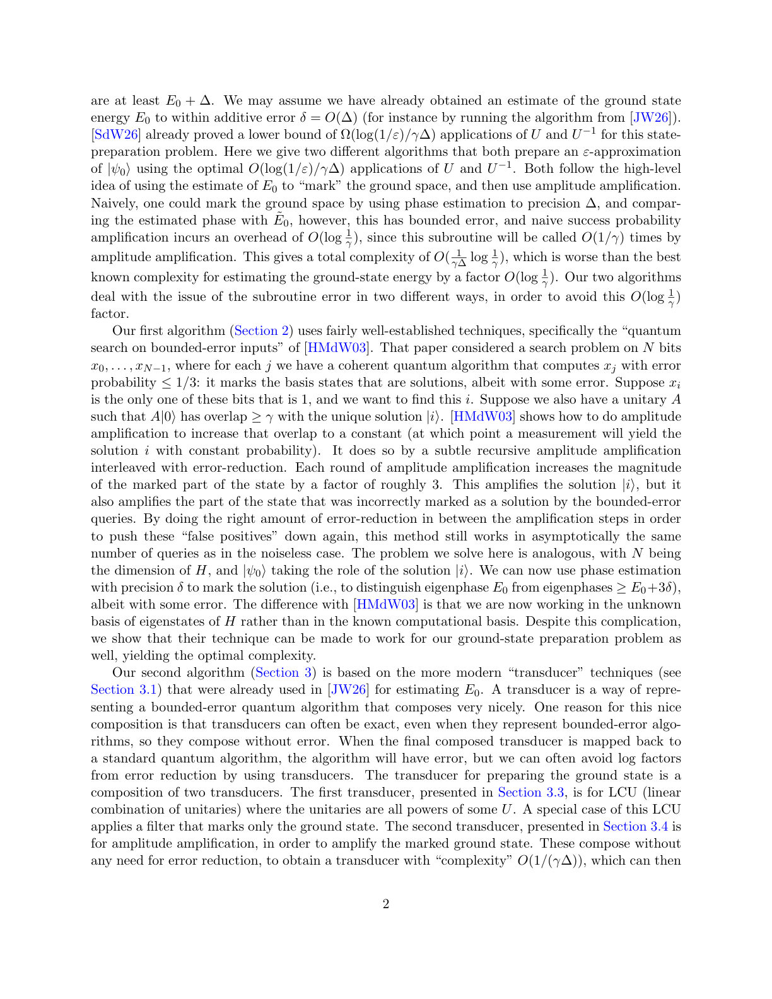
<figcaption class="paper-figure-caption"><b>Fig 1.</b> Low-resolution page preview, page 2</figcaption>
</figure>
<figure class="paper-figure-card">
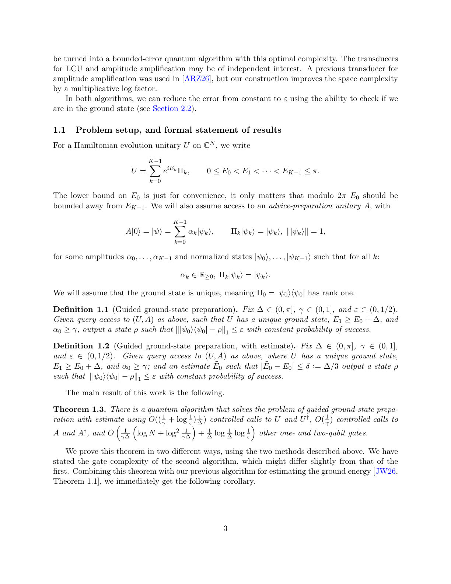
<figcaption class="paper-figure-caption"><b>Fig 2.</b> Low-resolution page preview, page 3</figcaption>
</figure>
<figure class="paper-figure-card">
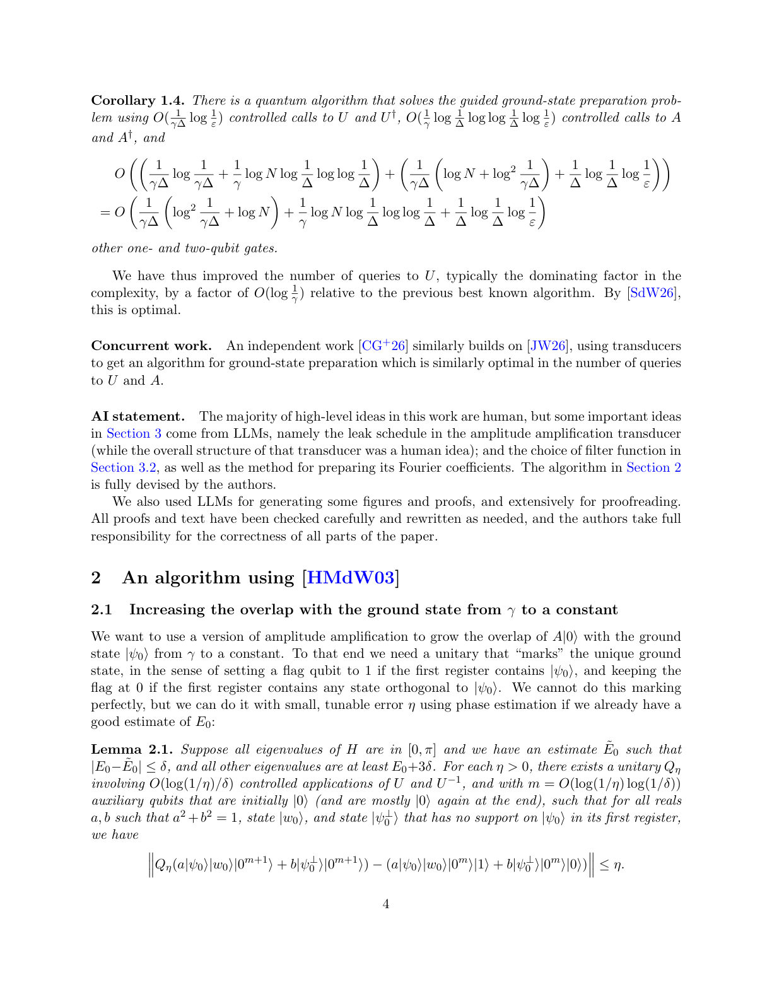
<figcaption class="paper-figure-caption"><b>Fig 3.</b> Low-resolution page preview, page 4</figcaption>
</figure>
<figure class="paper-figure-card">
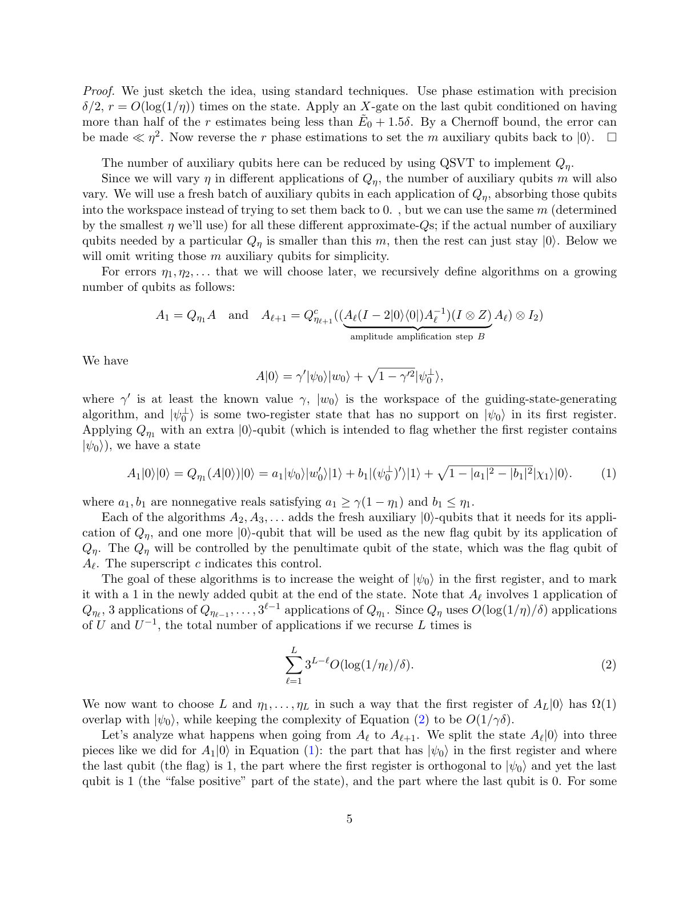
<figcaption class="paper-figure-caption"><b>Fig 4.</b> Low-resolution page preview, page 5</figcaption>
</figure>
<figure class="paper-figure-card">
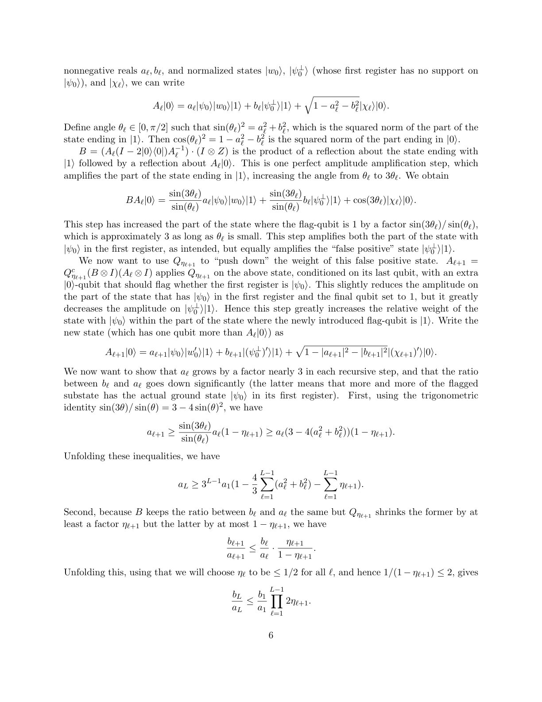
<figcaption class="paper-figure-caption"><b>Fig 5.</b> Low-resolution page preview, page 6</figcaption>
</figure>
</div>

<p><strong>Summary.</strong> This paper develops optimal quantum algorithms for preparing a state close to the ground state of a Hamiltonian, given limited initial information. By combining amplitude amplification with techniques like quantum transducers, the authors achieve a highly efficient complexity bound dependent on the initial overlap and energy estimation accuracy. This advances the field of quantum simulation by providing rigorous, near-optimal algorithmic guarantees.</p>
<p><strong>Why it may be interesting.</strong> This work provides state-of-the-art algorithmic tools for quantum simulation, directly impacting how efficiently we can prepare the ground state of complex Hamiltonians relevant to condensed matter physics.</p>
<details>
<summary>Detailed structure</summary>
<p><strong>Main problem.</strong> The paper addresses the challenge of efficiently preparing a quantum state that approximates the unique ground state of a given Hamiltonian, starting from a state with only a partial overlap.</p>
<p><strong>Main result.</strong> The authors derive an optimal complexity bound for ground-state preparation, achieving a query complexity of $O(\log(1/\varepsilon)/(\gamma\delta))$ applications of the Hamiltonian evolution operator $U=e^{iH}$ and the guiding state preparation unitary $A$.</p>
<p><strong>Method.</strong> The approach combines amplitude amplification techniques with error reduction methods, and later develops an alternative framework using quantum transducers to achieve the required state projection.</p>
<p><strong>Model / system.</strong> The system is defined by a Hamiltonian $H$ possessing a unique ground state $|\psi_0
angle$ with energy $E_0$. The process requires access to the unitary evolution $U=e^{iH}$ and a unitary $A$ that generates a 'guiding state' $A|0
angle$ with initial overlap $\gamma$ with $|\psi_0
angle$.</p>
<p><strong>Key observables.</strong> The primary observable is the fidelity or overlap between the prepared state and the true ground state $|\psi_0
angle$.</p>
<p><strong>Important parameters / regimes.</strong> Key parameters include the initial overlap $\gamma$, the energy estimation error $\delta$, the target approximation error $\epsilon$, and the gap $\Delta$ between $E_0$ and other eigenvalues.</p>
<p><strong>Assumptions / limitations.</strong> The analysis assumes the existence of an estimate $  ilde{E}_0$ for $E_0$ with precision $\delta$, and that the Hamiltonian is gapped by at least $3\delta$.</p>
<p><strong>Figures summary.</strong> No specific figure summaries were extracted, but the notes detail mathematical derivations and state evolution equations.</p>
<p><strong>Paper structure.</strong> The paper presents two distinct algorithmic approaches: one interleaving amplitude amplification and error reduction (following [HMdW03]), and a second, more advanced method utilizing quantum transducers for state projection.</p>
</details>
<details>
<summary>Abstract</summary>
<p>Suppose a Hamiltonian $H$ has a unique ground state $|ψ_0\rangle$ with an eigenvalue $E_0$, and we have an estimate $\tilde{E}_0$ such that $|\tilde{E}_0-E_0|\leqδ$, and there is a gap of at least $3δ$ between $E_0$ and all other eigenvalues. Suppose we have a unitary $A$ available that can produce a "guiding state'" $A|0\rangle$ that has overlap at least $γ$ with $|ψ_0\rangle$. We show how to obtain an $\varepsilon$-approximation of $|ψ_0\rangle$ using $O(\log(1/\varepsilon)/γδ)$ applications of $U=e^{iH}$ and $A$, and their inverses. We give two different algorithms, one based on interleaving amplitude amplification and error-reduction in the style of [HMdW03], and one using the composition of transducers. This paper is the state-preparation follow-up to our two recent ground-state-energy estimation papers [JW26, SdW26]. Combined, our results show an optimal $O(\log(1/\varepsilon)/γδ)$ upper bound for ground state preparation.</p>
</details>
<p><sub><a href="#top">↑ back to top</a></sub></p>

<p><a id="paper-2609.36579"></a></p>
<h3 id="root-system-structure-of-sloppiness-in-passive-gaussian-metrology"><a href="http://arxiv.org/abs/2609.36579v1">Root-system structure of sloppiness in passive Gaussian metrology</a></h3>
<p><strong>Authors:</strong> A. Kafuri, B. M. Rodriguez-Lara<br>
<strong>Type:</strong> theory · <strong>Category:</strong> other · <strong>PDF:</strong> <a href="https://arxiv.org/pdf/2609.36579v1">https://arxiv.org/pdf/2609.36579v1</a><br>
<strong>Analysis basis:</strong> full PDF text, analyzed in chunks
<strong>Topic relevance:</strong> <code>quantum measurements</code> <strong>3/5</strong> · <code>quantum optics experiment</code> <strong>1/5</strong></p>
<div class="figure-strip-hint">↔ Scroll figures horizontally</div>
<div class="paper-figures-scroll">
<figure class="paper-figure-card">

<figcaption class="paper-figure-caption"><b>Fig 1.</b> FIG. 1. Restricted-root arrangements in squeezing-spectrum space. (a) Arrangement for the C2</figcaption>
</figure>
<figure class="paper-figure-card">
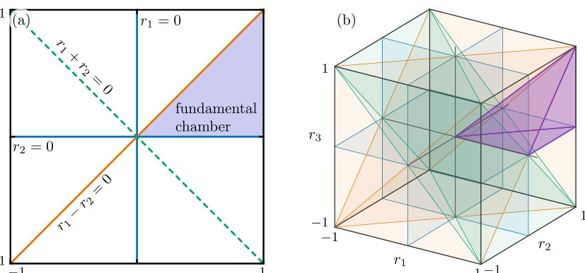
<figcaption class="paper-figure-caption"><b>Fig 2.</b> Figure 1 shows the restricted-root arrangement for the first two nontrivial cases, illustrat-</figcaption>
</figure>
<figure class="paper-figure-card">
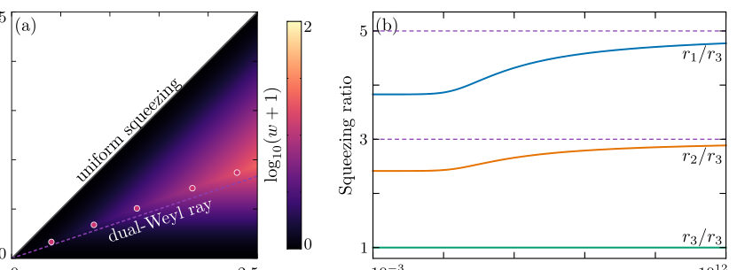
<figcaption class="paper-figure-caption"><b>Fig 3.</b> FIG. 2. E-optimal (maximin) probe design in the canonical angle normalization. (a) The quantity</figcaption>
</figure>
<figure class="paper-figure-card">
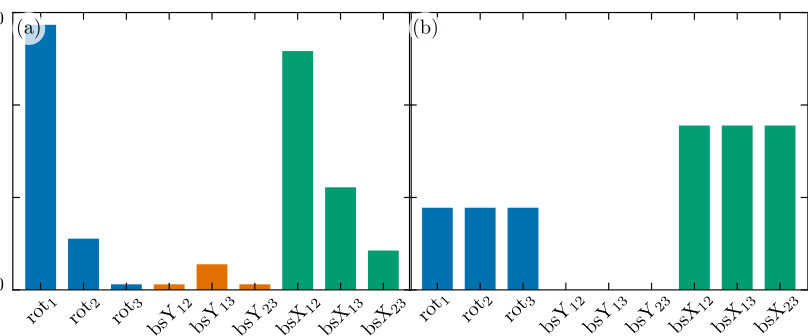
<figcaption class="paper-figure-caption"><b>Fig 4.</b> FIG. 3. Passive Fisher spectra for the two competing probe-design objectives at n = 3 and mean</figcaption>
</figure>
</div>

<p><strong>Summary.</strong> This paper rigorously analyzes the fundamental limits of quantum sensing using passive Gaussian transformations. It shows that the loss of measurement identifiability is governed by the $C_n$ root system, and it derives optimal squeezing strategies for maximizing measurement sensitivity. The results provide a comprehensive classification of local identifiability, sensitivity optimization, and resource compatibility in quantum metrology.</p>
<p><strong>Why it may be interesting.</strong> This work provides a deep mathematical framework connecting the algebraic structure of symmetry groups (root systems) directly to the fundamental physical limits of quantum measurement precision in continuous variable systems.</p>
<details>
<summary>Detailed structure</summary>
<p><strong>Main problem.</strong> The paper determines the global structure governing parameter identifiability, sensitivity, and compatibility for passive Gaussian transformations in quantum metrology.</p>
<p><strong>Main result.</strong> The exact sloppiness structure is governed by the $C_n$ restricted-root system, and the E-optimal probe design leads to an arithmetic progression for the optimal squeezing spectrum.</p>
<p><strong>Method.</strong> The authors use algebraic geometry (restricted-root systems) combined with quantum estimation theory (Quantum Fisher Matrix analysis) to map physical limitations to mathematical structures.</p>
<p><strong>Model / system.</strong> The system involves $n$-mode squeezed Gaussian probes undergoing passive transformations, analyzed within the framework of the Lie group $  ext{Sp}(2n,\mathbb{R})/ ext{U}(n)$.</p>
<p><strong>Key observables.</strong> Quantum Fisher Matrix (QFI) eigenvalues, passive Fisher weights, and the condition number ($\kappa$) of the sensitivity matrix.</p>
<p><strong>Important parameters / regimes.</strong> Squeezing spectrum $r = (r_1, \dots, r_n)$, mean photon number $N$, and the resource allocation parameter $a$.</p>
<p><strong>Assumptions / limitations.</strong> The analysis focuses on pure zero-mean Gaussian probes and utilizes the canonical squeezing basis for initial structural identification.</p>
<p><strong>Figures summary.</strong> Figures illustrate the restricted-root arrangements for $C_2$ and $C_3$, showing singular lines/planes corresponding to vanishing Fisher weights, and compare optimal design strategies.</p>
<p><strong>Paper structure.</strong> The paper systematically moves from identifying the algebraic structure ($C_n$ roots) governing Fisher-rank loss, to solving optimization problems (E-optimal, A-optimal) for probe design, and finally analyzing resource limits and degeneracy lifting via displacement measurements.</p>
</details>
<details>
<summary>Abstract</summary>
<p>Passive transformations of an $n$-mode squeezed probe become locally unidentifiable when the quantum Fisher matrix loses rank. For pure zero-mean Gaussian probes, we show that the $C_{n}$ restricted-root system of $\mathrm{Sp}(2n,\mathbb{R})/\mathrm{U}(n)$ governs this exact sloppiness. For squeezing magnitudes $r_{1},\ldots,r_{n}$ in the canonical basis, the roots $2r_{j}$ and $r_{j}\pm r_{k}$ label the local phase rotations and two beam-splitter quadratures, and their vanishing identifies every Fisher-null direction. The associated Fisher weights quantify the approach to each singular wall. At fixed positive mean photon number, we solve the E-optimal probe-design problem of maximizing the smallest passive Fisher eigenvalue in two explicit generator normalizations. In the canonical phase and beam-splitter angle convention, the unique optimum in the fundamental Weyl chamber is an arithmetic progression approaching the consecutive-odd-integer dual-Weyl direction at large resource. With an invariant generator norm, the smallest eigenvalue is independent of the passive frame and the optimum lies exactly on that ray at every resource. Uniform squeezing instead minimizes the local-phase A-optimal cost while leaving one beam-splitter quadrature unidentifiable for every mode pair. Finally, the two quadratures of each identifiable mode pair saturate the quantum-geometric incompatibility bound, and the largest compatible passive submodel has $n(n+1)/2$ parameters at a regular spectrum. The resulting classification separates local identifiability, sensitivity optimization, and simultaneous attainability.</p>
</details>
<p><sub><a href="#top">↑ back to top</a></sub></p>

<p><a id="paper-2609.37193"></a></p>
<h3 id="adaptive-rotation-for-isoma-geometry-benchmarking-and-noise-robustness-in-variational-quantum-objectives"><a href="http://arxiv.org/abs/2609.37193v1">Adaptive Rotation for iSOMA: Geometry, Benchmarking, and Noise Robustness in Variational Quantum Objectives</a></h3>
<p><strong>Authors:</strong> Vojtěch Novák, Ivan Zelinka<br>
<strong>Type:</strong> both · <strong>Category:</strong> numerical methods · <strong>PDF:</strong> <a href="https://arxiv.org/pdf/2609.37193v1">https://arxiv.org/pdf/2609.37193v1</a><br>
<strong>Analysis basis:</strong> full PDF text, analyzed in chunks
<strong>Topic relevance:</strong> <code>analog quantum simulation</code> <strong>3/5</strong></p>
<div class="figure-strip-hint">↔ Scroll figures horizontally</div>
<div class="paper-figures-scroll">
<figure class="paper-figure-card">
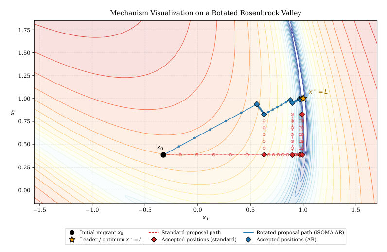
<figcaption class="paper-figure-caption"><b>Fig 1.</b> Fig. 1 Illustrative proposal geometry on a rotated Rosenbrock valley. With the same partially active perturbation mask, standard iSOMA applies masking in the original coordinate system, whereas iSOMA-AR applies it in the learned basis Qs. The rotated proposals follow the valley geometry more directly and make faster progress toward the leader. Discrete points denote evaluated path locations and diamonds denote accepted replacements.</figcaption>
</figure>
<figure class="paper-figure-card">
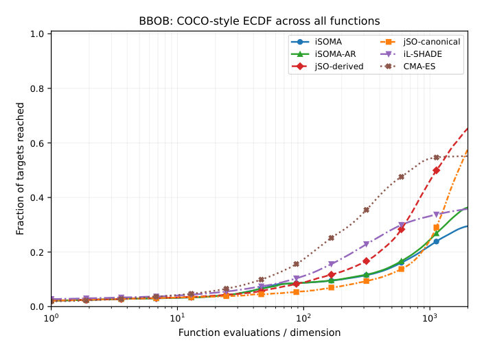
<figcaption class="paper-figure-caption"><b>Fig 2.</b> Fig. 2 COCO-style fixed-target ECDF across all BBOB functions, dimensions, instances, and 51 target precisions at the 2000D budget. The jSO-derived and jSO-canonical implementations are shown as separate curves; canonical jSO is a post-hoc sensitivity comparator and is not included in the primary five-method rank analysis.</figcaption>
</figure>
<figure class="paper-figure-card">
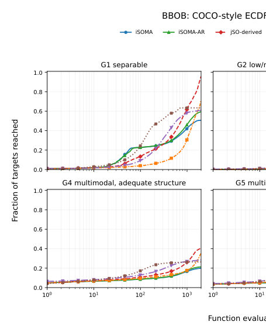
<figcaption class="paper-figure-caption"><b>Fig 3.</b> Fig. 3 COCO-style fixed-target ECDF split by the five official BBOB function groups.</figcaption>
</figure>
<figure class="paper-figure-card">
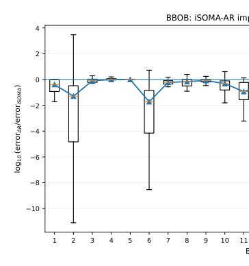
<figcaption class="paper-figure-caption"><b>Fig 4.</b> Fig. 4 Distribution of log10(errorAR/erroriSOMA) by BBOB function. Values below zero favor iSOMA-AR.</figcaption>
</figure>
<figure class="paper-figure-card">
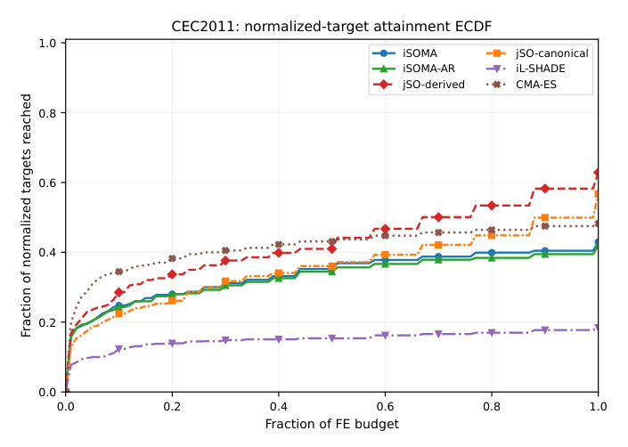
<figcaption class="paper-figure-caption"><b>Fig 5.</b> Fig. 5 Diagnostic normalized-target ECDF over the 22 CEC 2011 real-world problems. Targets are relative gap reductions reconstructed from saved checkpoints; this diagnostic lies outside the official CEC/COCO metrics.</figcaption>
</figure>
</div>

<p><strong>Summary.</strong> This paper introduces iSOMA-AR, an enhanced optimization algorithm that uses adaptive rotation to learn an optimal basis for guiding search proposals in complex, coordinate-dependent landscapes. It demonstrates that this technique significantly boosts performance on deterministic black-box benchmarks and improves optimization for certain quantum spin models. The work highlights that while adaptive rotation is powerful for geometry, the overall noise robustness of the method relies more on the underlying SOMA migration mechanism.</p>
<p><strong>Why it may be interesting.</strong> While the focus is on optimization algorithms, the application to VQOs and the explicit comparison of search geometry against physical Hamiltonians makes it relevant to understanding the optimization landscape of quantum circuits.</p>
<details>
<summary>Detailed structure</summary>
<p><strong>Main problem.</strong> The paper addresses the challenge of optimizing Variational Quantum Objectives (VQOs) by improving the search mechanism of the iSOMA algorithm to reduce coordinate dependence.</p>
<p><strong>Main result.</strong> Adaptive rotation (iSOMA-AR) significantly outperforms baseline iSOMA on noiseless, geometrically difficult black-box optimization benchmarks, suggesting its utility in coordinate-sensitive deterministic problems.</p>
<p><strong>Method.</strong> The core method is iSOMA-AR, which learns an optimal basis from successful migration displacements to selectively apply the perturbation mask, guiding the search along local geometric features.</p>
<p><strong>Model / system.</strong> The work benchmarks optimization on general black-box global optimization problems (BBOB, CEC 2011) and specific quantum objectives derived from frustrated-spin models (Hamiltonians $H_{SG}, Q1, Q2, Q3$).</p>
<p><strong>Key observables.</strong> Performance metrics include success rates, convergence trajectories (mean rank), and the comparison of objective function values ($E_{best} - E_0$) across different noise levels.</p>
<p><strong>Important parameters / regimes.</strong> Key parameters include the learning rate ($\eta$), the off-axis score threshold ($
ho &gt; 0.18$), and the noise strength applied to the quantum evaluations.</p>
<p><strong>Assumptions / limitations.</strong> The primary assumption is that the standard PRT mask is suboptimal because it is tied to the global coordinate system, which iSOMA-AR attempts to correct by learning a local basis.</p>
<p><strong>Figures summary.</strong> Figures illustrate the improved proposal geometry of iSOMA-AR over standard iSOMA on rotated valleys, and tables summarize performance comparisons across BBOB and CEC 2011 benchmarks.</p>
<p><strong>Paper structure.</strong> The paper introduces iSOMA-AR, details its mechanism using learned bases, benchmarks it extensively on noiseless BBOB and CEC 2011 problems, tests its application on frustrated-spin VQA objectives, and finally analyzes its robustness under increasing noise.</p>
</details>
<details>
<summary>Abstract</summary>
<p>We study whether the coordinate dependence of the improved Self-Organizing Migrating Algorithm (iSOMA) can be reduced while retaining its inexpensive leader-directed migration mechanism. We introduce iSOMA-AR, which learns a basis from successful migration displacements and selectively applies the standard perturbation mask in that basis. On the complete noiseless BBOB suite, iSOMA- AR significantly outperformed baseline iSOMA across matched conditions, with the largest gains on geometrically difficult landscapes. A targeted ablation shows that the learned orientation is beneficial on a rotated ill-conditioned landscape and that moderate changes of the gate threshold and rotation cap preserve the qualitative result. On CEC 2011 Real World Optimization Problems, iSOMA-AR outperformed iL-SHADE on most problems, although its advantage over baseline iSOMA was not statistically significant. A canonical-jSO rerun is reported as a post-hoc sensitivity check alongside the original jSO-derived comparator. On frustrated-spin variational quantum objectives, adaptive rotation improved most transverse-field conditions, while gains on the diagonal and anisotropic models were absent or selective. Under strong effective sampling noise, the SOMA variants were the most robust population-based methods in the comparison, but iSOMA-AR was not significantly better than baseline iSOMA. Repairing all-zero PRT masks greatly reduced repeated-point evaluations without changing endpoint quality significantly, making this implementation detail unlikely to explain the noise result. Overall, adaptive rotation is most useful on coordinate-sensitive deterministic problems, while the observed noise robustness appears to arise mainly from the underlying SOMA migration mechanism.</p>
</details>
<p><sub><a href="#top">↑ back to top</a></sub></p>

<p><a id="paper-2609.36538"></a></p>
<h3 id="frustrated-gd3-double-perovskites-as-high-performance-magnetocaloric-materials-for-sub-100-mk-adiabatic-demagnetization-refrigeration"><a href="http://arxiv.org/abs/2609.36538v1">Frustrated Gd3+ Double Perovskites as High-Performance Magnetocaloric Materials for Sub-100 mK Adiabatic Demagnetization Refrigeration</a></h3>
<p><strong>Authors:</strong> Tim Treu, Marvin Klinger, Christian Heil, Hans-Albrecht Krug von Nidda, Vinicius E. S. Frehse, Mamoun Hemmida, Anton Jesche, Alexander A. Tsirlin, Philipp Gegenwart<br>
<strong>Type:</strong> both · <strong>Category:</strong> statistical mechanics · <strong>PDF:</strong> <a href="https://arxiv.org/pdf/2609.36538v1">https://arxiv.org/pdf/2609.36538v1</a><br>
<strong>Analysis basis:</strong> full PDF text, analyzed in chunks
<strong>Topic relevance:</strong> <code>analog quantum simulation</code> <strong>3/5</strong></p>
<div class="figure-strip-hint">↔ Scroll figures horizontally</div>
<div class="paper-figures-scroll">
<figure class="paper-figure-card">
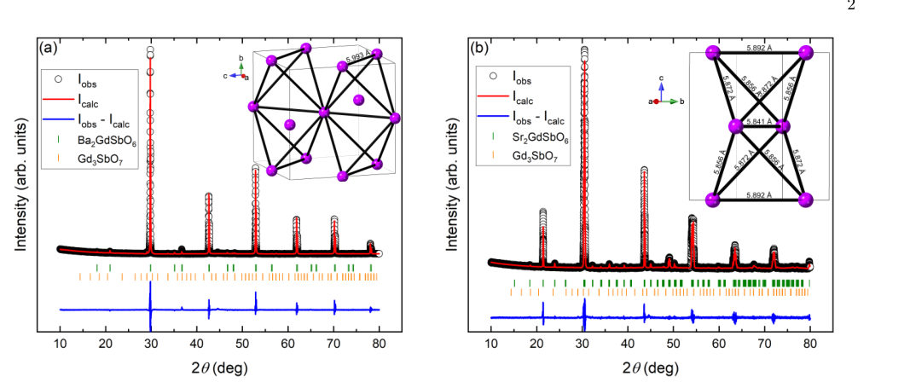
<figcaption class="paper-figure-caption"><b>Fig 1.</b> FIG. 1. SPXRD pattern of Ba2GdSbO6 (a) and Sr2GdSbO6 (b) collected at 300 K. The insets depict the Gd3+-ion tetrahedral coordination within the respective unit cells, with bond distances given in ˚A.</figcaption>
</figure>
<figure class="paper-figure-card">
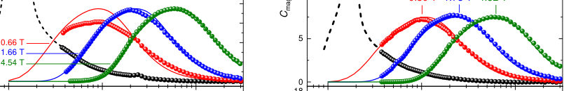
<figcaption class="paper-figure-caption"><b>Fig 2.</b> FIG. 3. Temperature-dependent magnetic specific heat Cmag(T) (upper panels) and entropy Smag(T) (lower panels) of (a) Ba2GdSbO6 and (b) Sr2GdSbO6. The dashed lines indicate data calculated from the ADR warming curves (see Section II D). The colored lines illustrate model calculations based on Equation C2, utilising the specified effective field values. Grey arrows indicate the potential to cool to below 100 mK during an ADR process.</figcaption>
</figure>
<figure class="paper-figure-card">
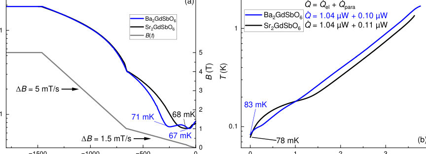
<figcaption class="paper-figure-caption"><b>Fig 3.</b> FIG. 4. (a) ADR cooling curves starting from T = 2 K and B = 5 T. The ramp rate was reduced below 1 T to improve temperature measurement accuracy. Ba2GdSbO6 exhibits two minima at 71 mK (0.4 T) and 67 mK (0.1 T), while Sr2GdSbO6 shows a single anomaly at 68 mK and 0.15 T. (b) Warming curves for both compounds after reaching zero field at t = 0, with phase transitions visible as kinks in the curves. Note that the short warmup time is caused by the deliberate introduction of significant electrical heating Qel (see Section G)</figcaption>
</figure>
<figure class="paper-figure-card">
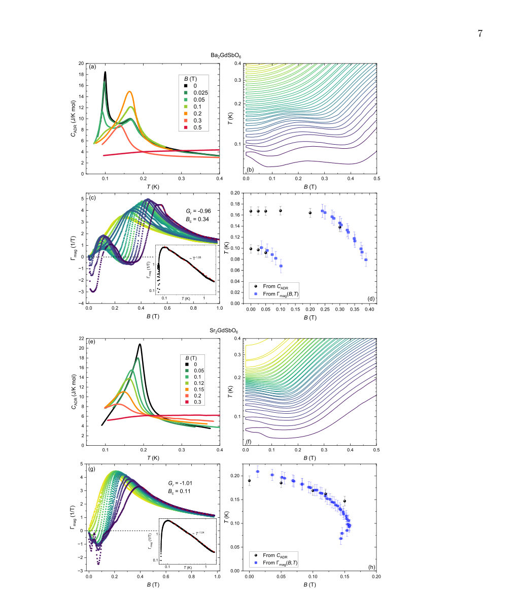
<figcaption class="paper-figure-caption"><b>Fig 4.</b> FIG. 5. Heat capacity CADR of Ba2GdSbO6 (a) and Sr2GdSbO6 (e) derived from ADR warming curves using Eq. G1. (b), (f) T(B) plots of Ba2GdSbO6 (a) and Sr2GdSbO6 recorded by sweeping the applied field between 0 and 1 T, starting from 2 K and 5 T. The minima in the traces indicate magnetic phase boundaries. (c), (g) Magnetic Gr¨uneisen parameter Γmag, calculated from the T(B) traces using Eq. 2. The inset shows the temperature dependence of Γmag. (d), (h) Tentative phase diagram, where the peak positions from (a), (e) and the zero crossings from (c), (g) are marked.</figcaption>
</figure>
</div>

<p><strong>Summary.</strong> This research identifies $ ext{Gd}^{3+}$-based double perovskites as excellent candidates for advanced cooling technologies due to their high magnetocaloric performance. By leveraging their frustrated magnetic structure, the materials achieve record low temperatures in Adiabatic Demagnetization Refrigeration (ADR). The combination of detailed magnetic measurements and thermodynamic modeling validates their potential for practical, ultra-low temperature applications.</p>
<p><strong>Why it may be interesting.</strong> The work directly addresses the practical limits of quantum refrigeration, providing material candidates whose magnetic phase transitions can be engineered to operate at the millikelvin scale, which is crucial for quantum computing infrastructure.</p>
<details>
<summary>Detailed structure</summary>
<p><strong>Main problem.</strong> The primary goal is to develop and test high-performance magnetocaloric materials capable of achieving temperatures below 100 mK for advanced quantum technologies using Adiabatic Demagnetization Refrigeration (ADR).</p>
<p><strong>Main result.</strong> The $  ext{Gd}^{3+}$-based double perovskites, $   ext{Ba}_2   ext{GdSbO}_6$ and $ ext{Sr}_2   ext{GdSbO}_6$, successfully demonstrate record low cooling temperatures (down to $\sim 67-78 	ext{ mK}$) and exhibit outstanding magnetic entropy densities.</p>
<p><strong>Method.</strong> The study combines experimental measurements of magnetic susceptibility, specific heat, and direct ADR cycling with theoretical modeling using mean-field approximations to analyze the magnetocaloric effect.</p>
<p><strong>Model / system.</strong> The system under investigation is the magnetic ordering and magnetocaloric response of $    ext{Gd}^{3+}$ ions within the double perovskite crystal structure ($    ext{Ba}_2   ext{GdSbO}_6$ and $ ext{Sr}_2   ext{GdSbO}_6$). The physics is governed by the interplay of exchange and dipolar interactions, which are suppressed by the frustrated geometry.</p>
<p><strong>Key observables.</strong> Adiabatic Demagnetization Refrigeration (ADR) temperatures, magnetic entropy density ($\Delta S_m$), specific heat capacity ($C_{	ext{mag}}$), and the magnetic Grüneisen parameter ($\Gamma_{	ext{mag}}$).</p>
<p><strong>Important parameters / regimes.</strong> Target temperatures below 100 mK; high magnetic entropy density ($\sim 190-200 	ext{ mJ K}^{-1} 	ext{ cm}^{-3}$); initial fields up to 5 T.</p>
<p><strong>Assumptions / limitations.</strong> The superior performance is attributed to the frustrated 3D network formed by $  ext{Gd}^{3+}$ ions, and models often rely on mean-field approximations for magnetic interactions.</p>
<p><strong>Figures summary.</strong> Figures show SPXRD confirming crystal structure, magnetic susceptibility vs. T/B, isothermal magnetization curves, and temperature traces from ADR cycles, comparing calculated and measured heat capacities.</p>
<p><strong>Paper structure.</strong> The paper progresses from establishing the need for ultra-low temperature cooling to characterizing the magnetic properties (susceptibility, $M(B)$), calculating the magnetocaloric effect ($\Delta S_m$), and finally demonstrating the performance via direct ADR measurements.</p>
</details>
<details>
<summary>Abstract</summary>
<p>Achieving temperatures below 100 mK is essential for advancing quantum technologies and exploring fundamental quantum phenomena. While paramagnetic salts have traditionally enabled adiabatic demagnetization refrigeration (ADR), their limitations have driven the search for more effective alternatives. In this work, we present Gd3+-based double perovskites, Ba2GdSbO6 and Sr2GdSbO6, as high-performance magnetocaloric materials. Starting ADR from 2 K and 5 T, these compounds reach 67 mK and 68 mK in small finite magnetic fields, and 83 mK and 78 mK in zero field, respectively, which are the lowest reported ADR temperatures for Gd3+ magnets (S = 7/2) under these conditions. The frustrated geometry and the complex interplay of exchange and dipolar interactions suppress their antiferromagnetic ordering temperatures to 100 and 166 mK for Ba2GdSbO6 and 190 mK for Sr2GdSbO6, while maintaining an outstanding entropy density of 189 mJ K-1 cm-3 and 201 mJ K-1 cm-3, respectively. Notably, Ba2GdSbO6 sustains sub-100 mK cooling even at finite fields of 0.5 T, making it particularly promising for practical ADR applications.</p>
</details>
<p><sub><a href="#top">↑ back to top</a></sub></p>

<p><a id="paper-2609.36258"></a></p>
<h3 id="magnetic-properties-and-fermi-surface-topology-of-kagome-magnet-hovmath687mathsnmath688math"><a href="http://arxiv.org/abs/2609.36258v1">Magnetic properties and Fermi-surface topology of kagome magnet HoV$_6$Sn$_6$</a></h3>
<p><strong>Authors:</strong> Tucker Beekmann, Ganesh Pokharel, Wyatt Edward Ackerman, Stephen D. Wilson, David E. Graf, Keshav Shrestha<br>
<strong>Type:</strong> both · <strong>Category:</strong> strongly correlated electrons · <strong>PDF:</strong> <a href="https://arxiv.org/pdf/2609.36258v1">https://arxiv.org/pdf/2609.36258v1</a><br>
<strong>Analysis basis:</strong> full PDF text, analyzed in chunks
<strong>Topic relevance:</strong> <code>analog quantum simulation</code> <strong>3/5</strong></p>
<div class="figure-strip-hint">↔ Scroll figures horizontally</div>
<div class="paper-figures-scroll">
<figure class="paper-figure-card">
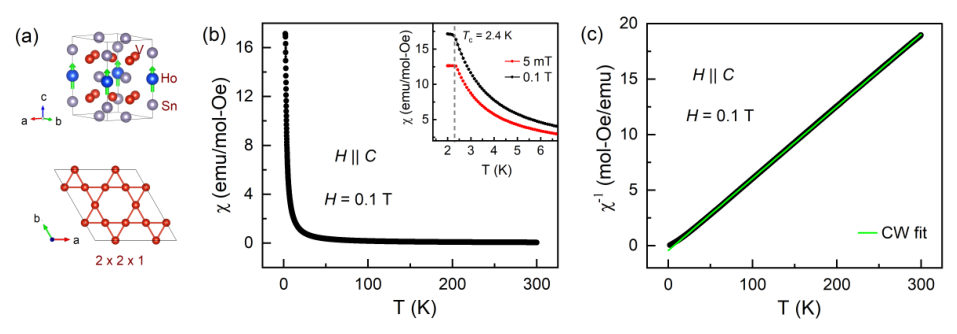
<figcaption class="paper-figure-caption"><b>Fig 1.</b> FIG. 1. (a) Unit cell of HoV6Sn6 (upper panel). The arrow indicates the magnetic moment direction</figcaption>
</figure>
<figure class="paper-figure-card">
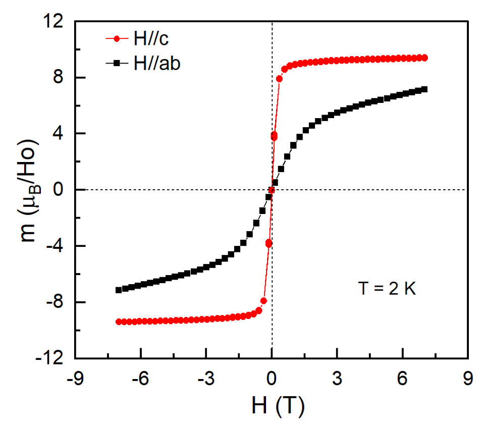
<figcaption class="paper-figure-caption"><b>Fig 2.</b> FIG. 2. Field-dependent magnetization M(H) of HoV6Sn6 measured at T = 2 K with the magnetic</figcaption>
</figure>
<figure class="paper-figure-card">
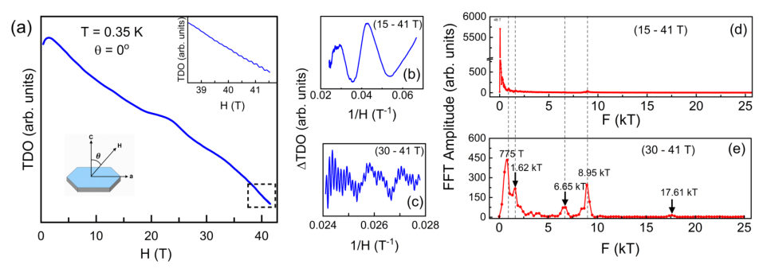
<figcaption class="paper-figure-caption"><b>Fig 3.</b> FIG. 3. (a) TDO signal as a function of magnetic field for HoV6Sn6 at T = 0.35 K and θ = 0◦,</figcaption>
</figure>
<figure class="paper-figure-card">
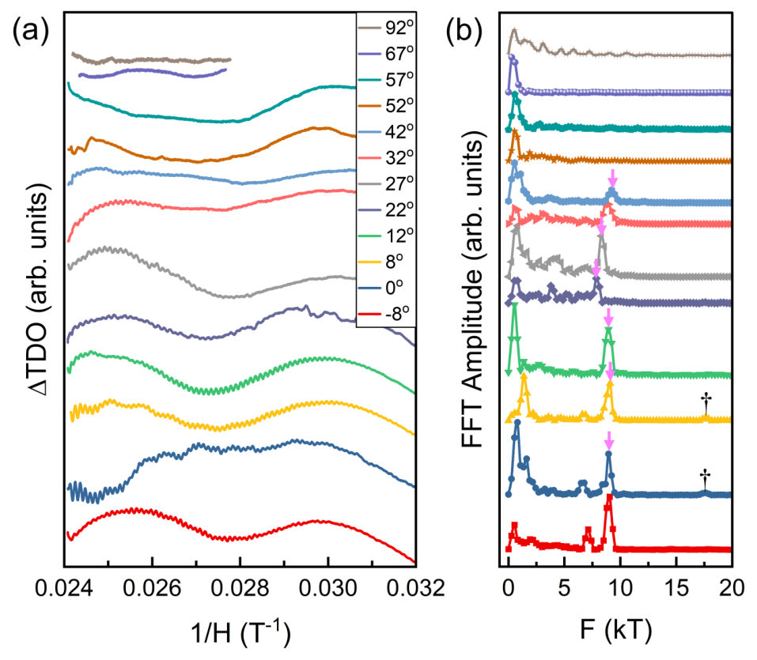
<figcaption class="paper-figure-caption"><b>Fig 4.</b> FIG. 4. (a) Background-subtracted TDO signals at selected tilt angles, θ. At low θ, a low-</figcaption>
</figure>
<figure class="paper-figure-card">
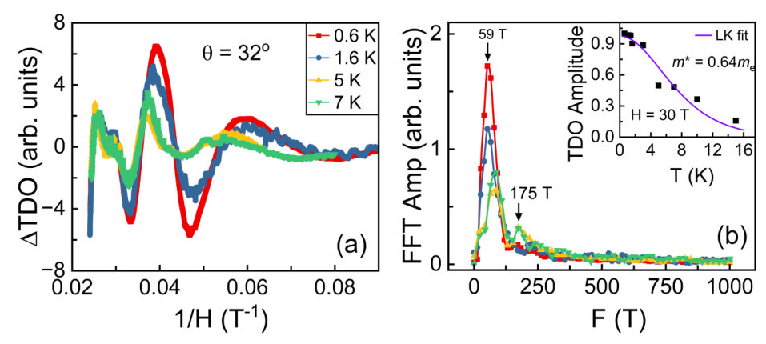
<figcaption class="paper-figure-caption"><b>Fig 5.</b> FIG. 5. (a) Temperature dependence of the TDO signal of HoV6Sn6 at selected temperatures,</figcaption>
</figure>
</div>

<p><strong>Summary.</strong> This work comprehensively characterizes the magnetic and electronic properties of the kagome magnet HoV6Sn6. By combining magnetization measurements, quantum oscillation experiments, and DFT calculations, the authors establish strong magnetic anisotropy and map out a complex, multiband Fermi surface. The results highlight the crucial role of the V-d orbitals in determining the low-energy electronic behavior of this material.</p>
<p><strong>Why it may be interesting.</strong> The interplay between magnetic ordering, complex Fermi surface topology, and strong electronic correlations (V-d orbital dominance) in a geometrically frustrated kagome lattice is highly relevant to understanding strongly correlated electron systems.</p>
<details>
<summary>Detailed structure</summary>
<p><strong>Main problem.</strong> The study investigates the magnetic properties and Fermi-surface topology of the kagome magnet HoV6Sn6.</p>
<p><strong>Main result.</strong> The research reveals strong magnetic anisotropy favoring c-axis alignment and identifies a multiband Fermi-surface topology, with electronic properties dominated by V-d orbitals.</p>
<p><strong>Method.</strong> The study combines magnetization measurements, low-temperature quantum oscillation measurements (TDO), and first-principles electronic structure calculations.</p>
<p><strong>Model / system.</strong> The physical system is HoV6Sn6, a kagome lattice magnet. The electronic structure is modeled using DFT calculations, revealing features like flat bands and van Hove singularities near the Fermi level.</p>
<p><strong>Key observables.</strong> Temperature-dependent magnetization, magnetic anisotropy (saturation moments), quantum oscillation frequencies, and Fermi-surface geometry.</p>
<p><strong>Important parameters / regimes.</strong> Critical temperature $T_c \approx 2.4 \text{ K}$; magnetic fields up to 41.5 T; effective mass $m^* = 0.64(6)m_e$.</p>
<p><strong>Assumptions / limitations.</strong> The high-temperature susceptibility follows Curie-Weiss behavior, and the temperature dependence of quantum oscillations is analyzed using the Lifshitz–Kosevich formalism.</p>
<p><strong>Figures summary.</strong> Figures show magnetic susceptibility vs. temperature, field-dependent magnetization revealing anisotropy, and TDO spectra displaying multiple quantum oscillation frequencies whose angular dependence maps Fermi-surface pockets.</p>
<p><strong>Paper structure.</strong> The paper proceeds by characterizing the magnetic ordering via magnetization measurements, then probes the electronic structure and Fermi surface using TDO quantum oscillations, and finally corroborates these findings with first-principles calculations of the band structure and DOS.</p>
</details>
<details>
<summary>Abstract</summary>
<p>We report a study of the magnetic properties and Fermi-surface topology of the kagome magnet HoV$_6$Sn$_6$ using magnetization and tunnel-diode-oscillator (TDO) measurements. The temperature-dependent magnetization exhibits Curie-Weiss behavior at high temperatures and reveals long-range magnetic order below $T_c$ $\approx$ 2.4 K. Below Tc, the field-dependent magnetization reveals pronounced magnetic anisotropy, with saturation moments of $\approx$ 9.5 and 7 $μ_B$ /Ho for fields applied along the out-of-plane and in-plane directions, respectively. To probe the Fermi surface, we perform TDO measurements in magnetic fields up to 41.5 T and at temperatures down to 0.35 K. The TDO signal exhibits well-defined quantum oscillations with multiple frequencies extending up to $\sim$ 9 kT. Angular- and temperature-dependent measurements are used to determine the Fermi-surface geometry and cyclotron effective masses, respectively. To elucidate the electronic structure, we perform first-principles calculations of the electronic bands, density of states (DOS), and Fermi surface. The calculated band structure exhibits flat-band features, van Hove singularities, and Dirac-like crossings near the Fermi level. The DOS near the Fermi level is dominated by the V-d orbitals, indicating that the V kagome layers play a major role in determining the low-energy electronic properties of HoV6Sn6. Our calculations further support a ferromagnetic ground state with the Ho moments oriented along the c axis, consistent with neutron-scattering measurements. The calculated quantum-oscillation frequencies from the Fermi-surface pockets of HoV6Sn6 are in overall good agreement with the experimentally observed frequencies. Our combined experimental and theoretical results provide insight into the magnetic anisotropy and electronic structure of HoV$_6$Sn$_6$ and reveal its multiband Fermi-surface topology.</p>
</details>
<p><sub><a href="#top">↑ back to top</a></sub></p>

<p><a id="paper-2609.38150"></a></p>
<h3 id="neural-quantum-state-based-downfolding-of-the-three-band-emery-model-for-cuprates-and-nickelates"><a href="http://arxiv.org/abs/2609.38150v1">Neural-quantum-state based downfolding of the three-band Emery model for cuprates and nickelates</a></h3>
<p><strong>Authors:</strong> Hannah Lange, Julius F. A. Tirpitz, Annabelle Bohrdt<br>
<strong>Type:</strong> theory · <strong>Category:</strong> strongly correlated electrons · <strong>PDF:</strong> <a href="https://arxiv.org/pdf/2609.38150v1">https://arxiv.org/pdf/2609.38150v1</a><br>
<strong>Analysis basis:</strong> full PDF text, analyzed in chunks
<strong>Topic relevance:</strong> <code>methods for driven-dissipative</code> <strong>3/5</strong></p>
<div class="figure-strip-hint">↔ Scroll figures horizontally</div>
<div class="paper-figures-scroll">
<figure class="paper-figure-card">
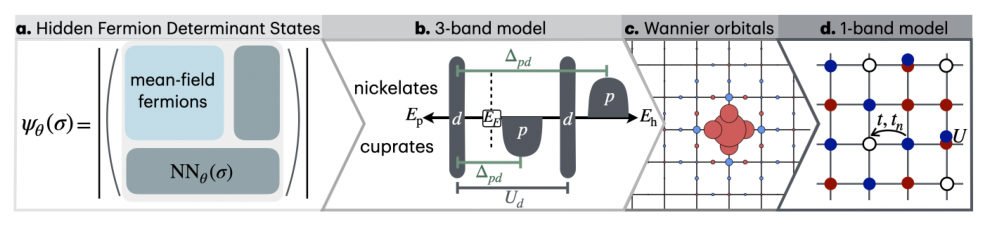
<figcaption class="paper-figure-caption"><b>Fig 1.</b> FIG. 1. We employ Hidden Fermion Determinant States (HFDS, a) to model the three-band Emery model relevant to cuprate and nickelate materials (b). This allows us to determine the interacting Wannier functions (c), here shown for ∆pd/tpd = 3.0 and δ = 1/8, and to downfold to a single-band Fermi-Hubbard model (d).</figcaption>
</figure>
<figure class="paper-figure-card">
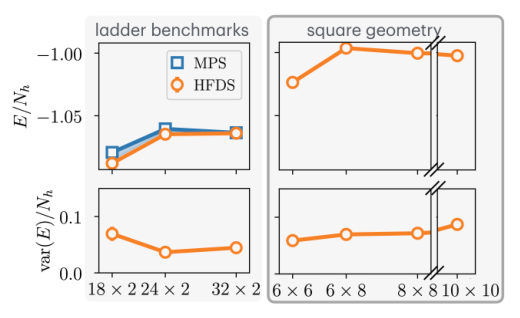
<figcaption class="paper-figure-caption"><b>Fig 2.</b> FIG. 2. Energy E and energy variance var(E) in units of tpd and per hole Nh for δ = 1/8, ∆pd/tpd = 3.5 and Ud/tpd = 6.0. Left: We compare the HFDS (orange) and MPS (blue) en- ergies for long Lx × 2 systems MPS calculations are feasi- ble with periodic (open) boundaries in the long direction for HFDS (MPS). The shaded blue region indicates the estimate on the energy difference from the different boundary condi- tions. Right: HFDS results for square geometries with fully periodic boundaries.</figcaption>
</figure>
<figure class="paper-figure-card">
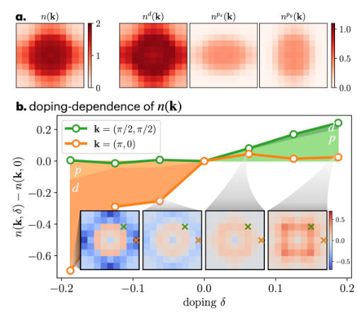
<figcaption class="paper-figure-caption"><b>Fig 3.</b> FIG. 3. The density in reciprocal space, n(k): a. We show the full n(k) as well as the contributions nν(k) from ν = d, px, py (left to right) for a 10 × 10 system with δ = 1/8 and ∆pd/tpd = 3.5. b. The difference n(k, δ) −n(k, 0) as a function of doping δ for 8 × 8 systems. Green (orange) show the result for the nodal k = (π/2, π/2) (antinodal k = (π, 0)) and equivalent points. Insets show the full difference map for selected doping values.</figcaption>
</figure>
<figure class="paper-figure-card">
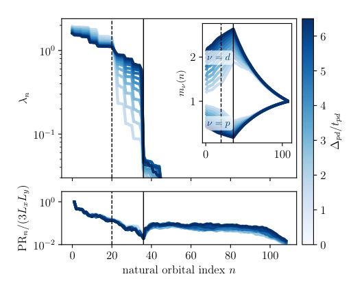
<figcaption class="paper-figure-caption"><b>Fig 4.</b> FIG. 4. Natural orbitals and Wannier functions for a 6 × 6 system at δ = 1/8 and with Ud/tpd = 6.0. We show the natu- ral orbital occupation λn (top panel). Solid (dashed) vertical lines correspond to n = LxLy (n = Nh/2). The inset displays the relative orbital mass mν(n) when occupying the corre- sponding natural orbitals vn up to the index n, see Eq. (10). Wannier functions wn are constructed as superpositions of vn projected onto the subspace {vl}l&lt;n. Small values of the participation ratio PRn, Eq. (11), indicate a high degree of localization.</figcaption>
</figure>
<figure class="paper-figure-card">
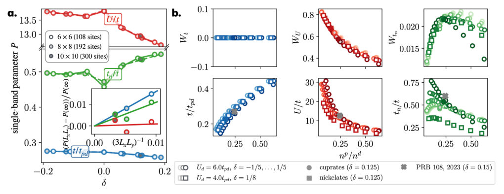
<figcaption class="paper-figure-caption"><b>Fig 5.</b> FIG. 5. a. The largest contributions to the downfolded single-band model as a function of electron (δ &lt; 0 and hole (δ &gt; 0) doping for Ud/tpd = 6.0 and ∆pd/tpd = 3.5: nearest-neighbor tunneling t (blue), on-site repulsion U (red) and density-assisted hopping tn (green), see Eq. (6). Markers with white, light gray and dark gray filling indicate the result for 6 × 6, 8 × 8 and 10×10 unit cell systems, respectively. The inset compares the effect of different system sizes explicitly by showing the difference for each parameter and each system size, P(LxLy), w.r.t. the extrapolated value, P(∞). b. The largest contributions to the downfolded single-band model as a function of the relative p- vs....</figcaption>
</figure>
</div>

<p><strong>Summary.</strong> This work applies Neural Quantum States (HFDS) to simulate the complex three-band Emery model relevant to cuprates and nickelates. The authors successfully downfold this multi-band model into effective single-band descriptions, revealing that these effective models deviate significantly from simple Fermi-Hubbard forms by requiring interaction terms like density-assisted hopping. This validates NQS as a powerful tool for studying strongly correlated electron systems.</p>
<p><strong>Why it may be interesting.</strong> The use of NQS to tackle the complex, strongly correlated nature of the Emery model provides a powerful, scalable numerical tool for studying high-Tc superconductivity, which is a major focus area in condensed matter theory.</p>
<details>
<summary>Detailed structure</summary>
<p><strong>Main problem.</strong> The central challenge is understanding the physics behind high-temperature superconductivity in cuprates and nickelates.</p>
<p><strong>Main result.</strong> The study establishes Neural Quantum States (HFDS) as an efficient tool for the 2D Emery model, showing that effective single-band descriptions require complex, non-Hubbard terms like density-assisted hopping ($t_n$).</p>
<p><strong>Method.</strong> The authors use Neural Quantum States (HFDS) as a variational approach to simulate the three-band Emery model and subsequently downfold it to effective single-band Hamiltonians using interacting Wannier functions.</p>
<p><strong>Model / system.</strong> The system is the three-band Emery model describing copper and nickel oxides, involving $d$ and $p$ orbitals, characterized by hopping terms ($t_{pd}$), charge-transfer energy ($\Delta_{pd}$), and on-site Hubbard interactions ($U_
u$).</p>
<p><strong>Key observables.</strong> Momentum-space distribution of dopants, effective single-band parameters ($U/t$, $t_n$), and the particle-hole asymmetry.</p>
<p><strong>Important parameters / regimes.</strong> Charge-transfer energy ($\Delta_{pd}$), doping ($\delta$), and interaction ratios ($U/t$).</p>
<p><strong>Assumptions / limitations.</strong> The single-band description derived via Wannier functions is an approximation, and the analysis relies on the variational minimization provided by the NQS ansatz.</p>
<p><strong>Figures summary.</strong> Figures illustrate the HFDS modeling of the three-band Emery model, the downfolding process to single-band models, and the systematic dependence of effective parameters on doping and charge-transfer energy.</p>
<p><strong>Paper structure.</strong> The paper first introduces the Emery model and the NQS method (HFDS) for simulation. It then details the downfolding procedure using Wannier functions to derive effective single-band Hamiltonians. Finally, it analyzes the resulting effective parameters across various doping and charge-transfer regimes.</p>
</details>
<details>
<summary>Abstract</summary>
<p>Understanding the physics underlying high-temperature superconductivity in cuprates and, more recently, infinite-layer nickelates has remained a central challenge in condensed-matter physics. We establish neural quantum states (NQS), specifically Hidden Fermion Determinant States (HFDS), as a scalable variational approach to the three-band Emery model of the copper- and nickel-oxide layers in these materials. After benchmarking HFDS against matrix product states on width-two geometries, we study ground states of fully two-dimensional (2D) systems of up to $10\times10$ unit cells ($300$ sites). We characterize the momentum-space distribution of dopants and find a pronounced electron-hole dichotomy similar to cuprate experiments. We further downfold the three-band model to effective single-band descriptions by constructing interacting Wannier functions. We consider a wide range of parameters -- from the charge-transfer regime relevant to cuprates to the Hubbard-Mott regime of nickelates, as well as systematic scans of the charge-transfer gap that has been demonstrated to impact the critical superconducting temperatures. Across all regimes, the effective model significantly deviates from the usual Fermi-Hubbard model: The typical ratio $U/t$ is enhanced, some parameters experience a significant doping dependence, and sizable terms beyond the conventional Hubbard model are present, most notably a density-assisted hopping $t_n$. Notably, in all effective models, $t_n$ has the largest contribution to particle-hole asymmetry, rather than next-nearest-neighbor hopping contributions. The effective parameters sensitively depend on the charge-transfer energy, doping, and interaction ratios. Our results establish HFDS as an efficient tool for studying the 2D Emery model and demonstrate that single-band descriptions can require interaction terms generated by the underlying multi-band models.</p>
</details>
<p><sub><a href="#top">↑ back to top</a></sub></p>

<p><a id="paper-2609.37781"></a></p>
<h3 id="optimal-single-copy-estimation-of-quantum-state-moments-why-math715math-and-math716math-are-equally-hard"><a href="http://arxiv.org/abs/2609.37781v1">Optimal single-copy estimation of quantum state moments: why $\operatorname{Tr}(ρ^3)$ and $\operatorname{Tr}(ρ^4)$ are equally hard</a></h3>
<p><strong>Authors:</strong> Zhenhuan Liu<br>
<strong>Type:</strong> theory · <strong>Category:</strong> quantum information and computing · <strong>PDF:</strong> <a href="https://arxiv.org/pdf/2609.37781v1">https://arxiv.org/pdf/2609.37781v1</a><br>
<strong>Analysis basis:</strong> full PDF text, analyzed in chunks
<strong>Topic relevance:</strong> <code>quantum measurements</code> <strong>3/5</strong></p>
<div class="figure-strip-hint">↔ Scroll figures horizontally</div>
<div class="paper-figures-scroll">
<figure class="paper-figure-card">
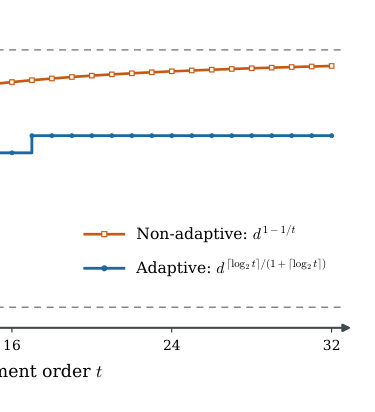
<figcaption class="paper-figure-caption"><b>Fig 1.</b> Figure 1: Comparison between sample complexities of adaptive and nonadaptive protocols.</figcaption>
</figure>
</div>

<p><strong>Summary.</strong> This theoretical paper determines the optimal number of single-copy measurements needed to estimate higher-order moments of an unknown quantum state. It establishes a clear scaling law for this complexity, showing that the difficulty follows a dyadic hierarchy for different moment orders. The results highlight the significant advantage provided by adaptive measurement strategies over nonadaptive ones for higher moments.</p>
<p><strong>Why it may be interesting.</strong> This work provides rigorous, quantitative bounds on the limits of quantum state tomography and characterization, which is crucial for designing practical quantum experiments and understanding the fundamental resource costs associated with measuring complex quantum correlations.</p>
<details>
<summary>Detailed structure</summary>
<p><strong>Main problem.</strong> The paper addresses the fundamental problem of determining the optimal sample complexity required to estimate nonlinear properties of an unknown quantum state, specifically the state moments $\operatorname{Tr}(
ho^t)$, using only single-copy measurements.</p>
<p><strong>Main result.</strong> The optimal sample complexity for estimating $\operatorname{Tr}(
ho^t)$ scales as $\Theta(d^{rac{\lceil\log_2 t
ceil}{1+\lceil\log_2 t
ceil}})$, showing a predictable dyadic hierarchy where moments like $\operatorname{Tr}(
ho^3)$ and $\operatorname{Tr}(
ho^4)$ share the same exponent.</p>
<p><strong>Method.</strong> The authors derive upper bounds using adaptive state filtering, which recursively reduces the problem to lower-order moment estimation in smaller state spaces. Lower bounds are established by comparing moment-matched ensembles via smooth interpolation.</p>
<p><strong>Model / system.</strong> The system is an unknown $d$-dimensional quantum state $
ho$. The measurement model is restricted to single-copy measurements, but the measurement strategy can be adaptive based on classical outcomes.</p>
<p><strong>Key observables.</strong> State moments $\operatorname{Tr}(
ho^t)$ for integer $t \ge 2$, purity ($\operatorname{Tr}(
ho^2)$), and related ordered overlaps.</p>
<p><strong>Important parameters / regimes.</strong> State dimension $d$, moment order $t$, and the required additive error $\epsilon$.</p>
<p><strong>Assumptions / limitations.</strong> The analysis assumes the ability to perform adaptive single-copy measurements for the upper bound, and the lower bound analysis relies on bounding the total variation distance between true and estimated probability measures.</p>
<p><strong>Figures summary.</strong> Figure 1 compares the sample complexities for adaptive versus nonadaptive protocols across various moment orders ($t=2, 3, 4, 5, 6, 8, 16, 24, 32$), illustrating the scaling behavior.</p>
<p><strong>Paper structure.</strong> The paper first establishes the optimal complexity for general moments using adaptive techniques, demonstrating the dyadic hierarchy. It then contrasts this with nonadaptive protocols, deriving a matching lower bound $\Omega(d^{1-1/t})$ for $t \ge 4$. The structure builds from the known purity case ($t=2$) to general higher-order moments.</p>
</details>
<details>
<summary>Abstract</summary>
<p>Estimating nonlinear properties of an unknown quantum state with restrictive experimental accessibility is a fundamental problem in quantum learning. We study the sample complexity of estimating the state moments $\operatorname{Tr}(ρ^t)$, allowing arbitrary adaptive single-copy measurements. While purity estimation has optimal sample complexity $Θ(\sqrt d)$ at constant additive error, the optimal dimension dependence for higher moments has remained unclear. We resolve this question for every fixed integer $t\ge 2$: for any sufficiently small constant additive error, the optimal sample complexity is \[ Θ\!\left(d^{\frac{\lceil\log_2 t\rceil}{1+\lceil\log_2 t\rceil}}\right) \] with constant success probability. The complexity thus follows a dyadic hierarchy: for each integer $h\geq1$, all moment orders $2^{h-1}<t\leq2^h$ share the same exponent. In particular, the third and fourth moments both require $Θ(d^{2/3})$ copies. We also establish an $Ω(d^{1-1/t})$ lower bound for arbitrary nonadaptive single-copy protocols, matching the known upper bound and demonstrating an advantage from adaptivity for every $t\geq4$. Our upper bound uses adaptive state filtering to reduce higher-order moment estimation to lower-order moment estimation in a smaller state space. For the lower bound, we directly compare moment-matched ensembles through a smooth interpolation, bypassing the maximally mixed state as an intermediate hypothesis and yielding matching bounds beyond $\sqrt d$.</p>
</details>
<p><sub><a href="#top">↑ back to top</a></sub></p>

<p><a id="paper-2609.38145"></a></p>
<h3 id="query-optimal-unitary-channel-tomography-in-diamond-distance-with-parallel-access"><a href="http://arxiv.org/abs/2609.38145v1">Query-optimal unitary channel tomography in diamond distance with parallel access</a></h3>
<p><strong>Authors:</strong> Entong He, Zihao Li, Yuxiang Yang<br>
<strong>Type:</strong> theory · <strong>Category:</strong> quantum information and computing · <strong>PDF:</strong> <a href="https://arxiv.org/pdf/2609.38145v1">https://arxiv.org/pdf/2609.38145v1</a><br>
<strong>Analysis basis:</strong> full PDF text, analyzed in chunks
<strong>Topic relevance:</strong> <code>quantum measurements</code> <strong>3/5</strong></p>
<div class="figure-strip-hint">↔ Scroll figures horizontally</div>
<div class="paper-figures-scroll">
<figure class="paper-figure-card">
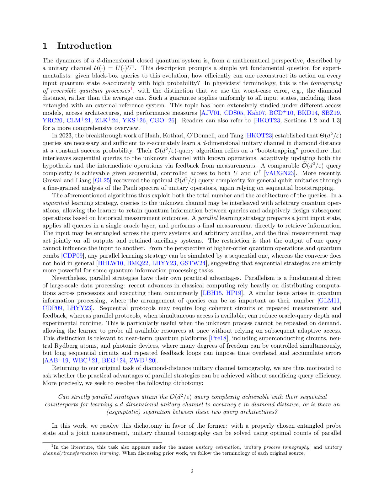
<figcaption class="paper-figure-caption"><b>Fig 1.</b> Low-resolution page preview, page 2</figcaption>
</figure>
<figure class="paper-figure-card">
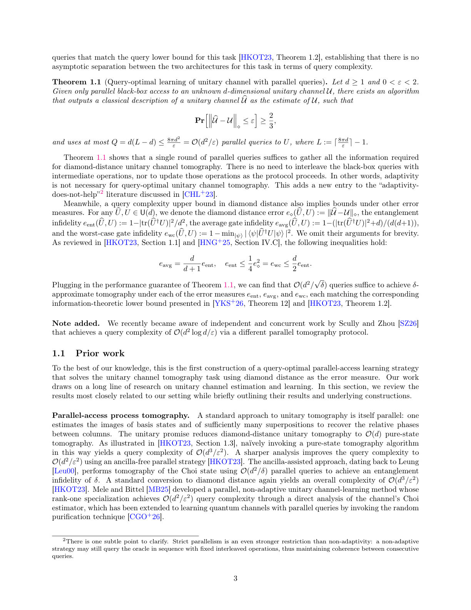
<figcaption class="paper-figure-caption"><b>Fig 2.</b> Low-resolution page preview, page 3</figcaption>
</figure>
<figure class="paper-figure-card">
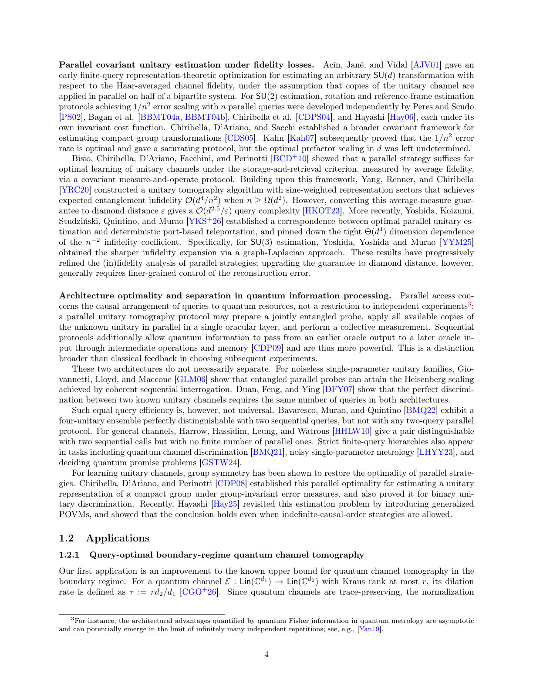
<figcaption class="paper-figure-caption"><b>Fig 3.</b> Low-resolution page preview, page 4</figcaption>
</figure>
<figure class="paper-figure-card">
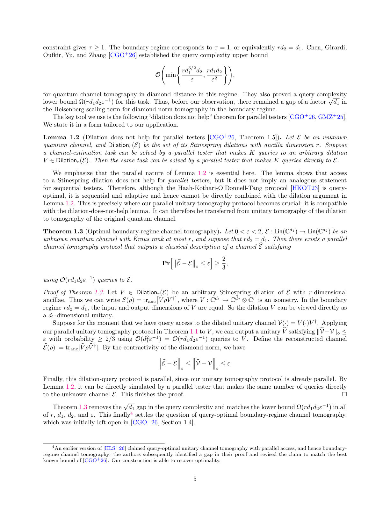
<figcaption class="paper-figure-caption"><b>Fig 4.</b> Low-resolution page preview, page 5</figcaption>
</figure>
<figure class="paper-figure-card">
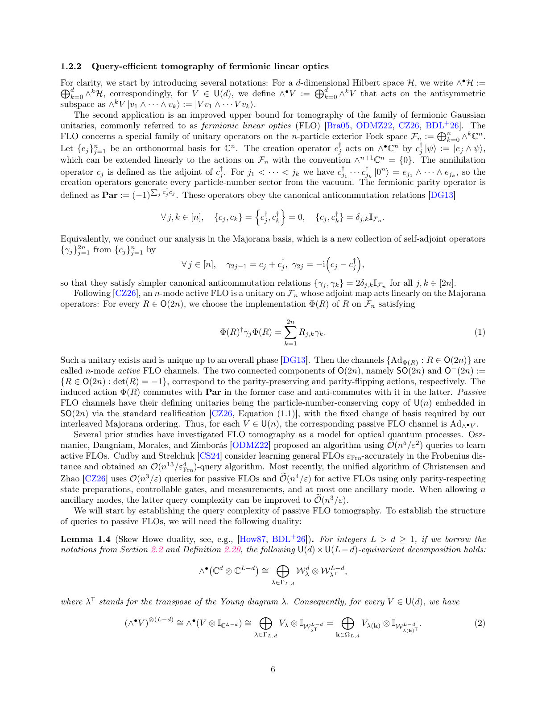
<figcaption class="paper-figure-caption"><b>Fig 5.</b> Low-resolution page preview, page 6</figcaption>
</figure>
</div>

<p><strong>Summary.</strong> This paper addresses the efficiency of quantum process tomography, specifically for unitary channels. It proves that a non-adaptive, parallel-query protocol can achieve the optimal query complexity, closing a theoretical gap that previously suggested sequential measurements were inherently more powerful. This result has implications for designing efficient quantum characterization experiments.</p>
<p><strong>Why it may be interesting.</strong> It resolves a long-standing theoretical gap by proving that adaptivity (the advantage of sequential measurements) is not necessary for achieving optimal query complexity in unitary channel tomography.</p>
<details>
<summary>Detailed structure</summary>
<p><strong>Main problem.</strong> Determining the most efficient query complexity to estimate an unknown unitary quantum channel in the diamond distance.</p>
<p><strong>Main result.</strong> The authors show a protocol using only parallel queries that achieves the optimal $O(d^2/\epsilon)$ query complexity, matching the lower bound previously established for sequential methods.</p>
<p><strong>Method.</strong> The work develops a new, non-adaptive protocol utilizing entangled probe states and joint measurements to estimate the unitary channel.</p>
<p><strong>Model / system.</strong> The system is a $d$-dimensional closed quantum system whose dynamics are governed by an unknown unitary channel $U$. The analysis compares parallel versus sequential query strategies.</p>
<p><strong>Key observables.</strong> Diamond distance ($\epsilon_{\diamond}$), entanglement infidelity ($\epsilon_{	ext{ent}}$), and average gate infidelity ($\epsilon_{	ext{avg}}$).</p>
<p><strong>Important parameters / regimes.</strong> Dimensionality $d$, desired accuracy $\epsilon$, and the number of queries $Q$.</p>
<p><strong>Assumptions / limitations.</strong> The protocol relies on the availability of a properly chosen entangled probe state and the ability to perform joint measurements.</p>
<p><strong>Paper structure.</strong> The paper establishes the problem of quantum process tomography, contrasts sequential vs. parallel query strategies, presents the new parallel protocol achieving optimal query complexity, and discusses applications to boundary-regime and fermionic systems.</p>
</details>
<details>
<summary>Abstract</summary>
<p>In the study of quantum process tomography, it has remained open how to learn a unitary channel in diamond distance with strictly parallel queries as efficiently as with sequential queries. Sequential queries allow one to exploit adaptivity to refine the estimate and adjust the learning strategy accordingly, whereas such adjustments are impossible for parallel queries. From the perspective of higher-order quantum operations, any parallel learning strategy can be simulated by a sequential one, whereas the converse does not hold in general, suggesting that sequential learning strategies are potentially more powerful. Contrary to this intuition, we present a new protocol for learning an unknown $d$-dimensional unitary channel to within $\varepsilon$ in diamond distance using $\mathcal{O}(d^2/\varepsilon)$ parallel queries, matching the lower bound presented in [Haah, Kothari, O'Donnell, and Tang, FOCS '23]. Our protocol thus closes the gap between parallel and sequential strategies for unitary channel tomography. As applications, it achieves optimal query complexity for boundary-regime quantum channel tomography and improves the query efficiency of the best-known protocol for tomography of fermionic linear optics.</p>
</details>
<p><sub><a href="#top">↑ back to top</a></sub></p>

<p><a id="paper-2609.36912"></a></p>
<h3 id="universal-inductive-inference-of-quantum-states"><a href="http://arxiv.org/abs/2609.36912v1">Universal Inductive Inference of Quantum States</a></h3>
<p><strong>Authors:</strong> Taiga Hiroka, Min-Hsiu Hsieh, Yuki Shirakawa<br>
<strong>Type:</strong> theory · <strong>Category:</strong> quantum information and computing · <strong>PDF:</strong> <a href="https://arxiv.org/pdf/2609.36912v1">https://arxiv.org/pdf/2609.36912v1</a><br>
<strong>Analysis basis:</strong> full PDF text, analyzed in chunks
<strong>Topic relevance:</strong> <code>quantum measurements</code> <strong>3/5</strong></p>
<div class="figure-strip-hint">↔ Scroll figures horizontally</div>
<div class="paper-figures-scroll">
<figure class="paper-figure-card">
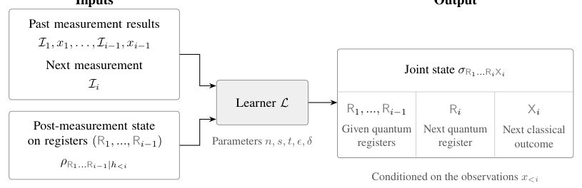
<figcaption class="paper-figure-caption"><b>Fig 1.</b> Figure 1: Inputs and output of the learner L at round i. The instruments I1, . . . , Ii−1 and their outcomes x1, . . . , xi−1 form the classical history h&lt;i = (I1, x1, ..., Ii−1, xi−1). The learner receives h&lt;i, the description of the target measurement Ii, and a single copy of the conditional post-measurement state ρR1...Ri−1|h&lt;i. It outputs a joint state σ on R1...RiXi, where Xi stores the next measurement outcome and Ri is the next post-measurement quantum system. The output must approximate the corresponding joint state of the source conditioned on h&lt;i, including its correlations with the past systems.</figcaption>
</figure>
</div>

<p><strong>Summary.</strong> This paper extends Solomonoff's universal induction principle to the quantum domain, creating a framework for predicting future quantum states based on measurement history. It establishes efficient algorithmic bounds for this inference task and proves that these bounds are fundamentally limited by information-theoretic lower bounds. The results are significant for understanding the computational complexity of quantum state reconstruction and prediction.</p>
<p><strong>Why it may be interesting.</strong> This work provides fundamental theoretical tools for characterizing the limits of prediction and learning in quantum systems, which is crucial for quantum machine learning and quantum process tomography.</p>
<details>
<summary>Detailed structure</summary>
<p><strong>Main problem.</strong> The paper develops a universal quantum inductive inference framework analogous to Solomonoff's induction for learning and predicting quantum sources.</p>
<p><strong>Main result.</strong> It establishes an information-theoretic algorithm for quantum inductive inference with round complexity $O(s\epsilon^{-2}\delta^{-1})$, matching a proven lower bound.</p>
<p><strong>Method.</strong> The authors use information-theoretic techniques to derive both upper bounds (algorithms) and lower bounds (complexity requirements) for the inference task.</p>
<p><strong>Model / system.</strong> The system models a quantum source generating multipartite quantum states ($
ho_{R_1...R_m}$) whose description is governed by an unknown $s$-bit program. The learning process involves predicting the next state and outcome given a history of measurements.</p>
<p><strong>Key observables.</strong> Trace distance ($\epsilon$), round complexity, and the joint state ($\sigma_{R_1...R_iX_i}$) predicting the next outcome.</p>
<p><strong>Important parameters / regimes.</strong> Source description length ($s$), error tolerance ($\epsilon$), failure probability ($\delta$), and the number of qubits ($n$).</p>
<p><strong>Assumptions / limitations.</strong> The source is assumed to be generated by an unknown $s$-bit program, and the analysis relies on quantum cryptographic assumptions for hardness results.</p>
<p><strong>Figures summary.</strong> Figure 1 illustrates the inputs (past history, next instrument, conditional state) and the output (joint predicted state) of the quantum inductive learner $L$ at any given round $i$.</p>
<p><strong>Paper structure.</strong> The paper first introduces the quantum inductive inference problem, then presents the algorithmic solution (Theorem 1.1) and the tomography algorithm (Theorem 1.2). It follows this by proving the matching lower bounds (Theorems A.1/4) and concluding with hardness results based on one-way puzzles.</p>
</details>
<details>
<summary>Abstract</summary>
<p>Solomonoff's universal inductive inference [Inf. Control. 1964] is one of the most general frameworks for learning from sequential data and predicting future observations. It provides prediction guarantees for any computable stochastic source. We ask whether an analogous universal theory of induction can be developed for quantum systems. To this end, we introduce universal quantum inductive inference, a framework for learning and predicting quantum sources that may exhibit arbitrary correlations and entanglement across time. Given the outcomes of past measurements and the corresponding post-measurement quantum systems, the learner produces a joint state that predicts the next measurement outcome and post-measurement system while preserving correlations with the past systems. We model a quantum source as a multipartite quantum state whose description is generated by an unknown $s$-bit program within a given time bound. The learner is required to produce a state that is $ε$-close in trace distance to the target with probability at least $1-δ$. We establish an information-theoretic inference algorithm with round complexity $O(sε^{-2}δ^{-1})$. We further prove a matching lower bound in the relevant parameter regime, even for classical sources. As a second result, we construct a non-i.i.d. state tomography algorithm that outputs a classical description of the conditional state of the next system given past measurement outcomes. Our information-theoretic tomography algorithm achieves round complexity $O(s\min\{2^s,2^n\}ε^{-2}δ^{-1})$, where $n$ is the number of qubits received in each round. Finally, we investigate the computational hardness of universal quantum inductive inference under quantum cryptographic assumptions.</p>
</details>
<p><sub><a href="#top">↑ back to top</a></sub></p>

<p><a id="paper-2609.36207"></a></p>
<h3 id="what-is-physics-for-why-classical-physics-is-not-the-limit-of-quantum-mechanics"><a href="http://arxiv.org/abs/2609.36207v1">What is Physics For? Why Classical Physics is not the Limit of Quantum Mechanics</a></h3>
<p><strong>Authors:</strong> Adam Frank, Jacques L. Pienaar, Michel Bitbol, Harald Wiltsche, Gabriela Barreto Lemos, Marcelo Gleiser, Marcus Appleby<br>
<strong>Type:</strong> theory · <strong>Category:</strong> other · <strong>PDF:</strong> <a href="https://arxiv.org/pdf/2609.36207v1">https://arxiv.org/pdf/2609.36207v1</a><br>
<strong>Analysis basis:</strong> full PDF text, analyzed in chunks
<strong>Topic relevance:</strong> <code>quantum measurements</code> <strong>3/5</strong></p>
<div class="figure-strip-hint">↔ Scroll figures horizontally</div>
<div class="paper-figures-scroll">
<figure class="paper-figure-card">
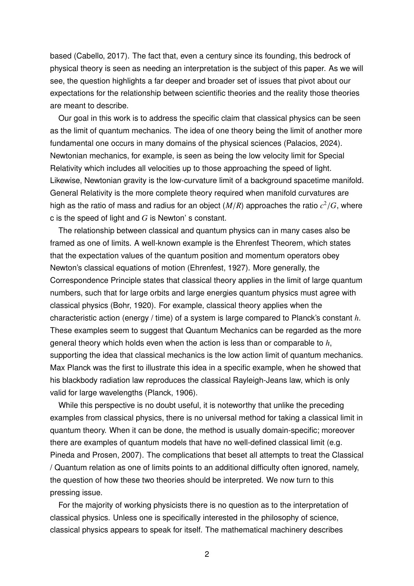
<figcaption class="paper-figure-caption"><b>Fig 1.</b> Low-resolution page preview, page 2</figcaption>
</figure>
<figure class="paper-figure-card">
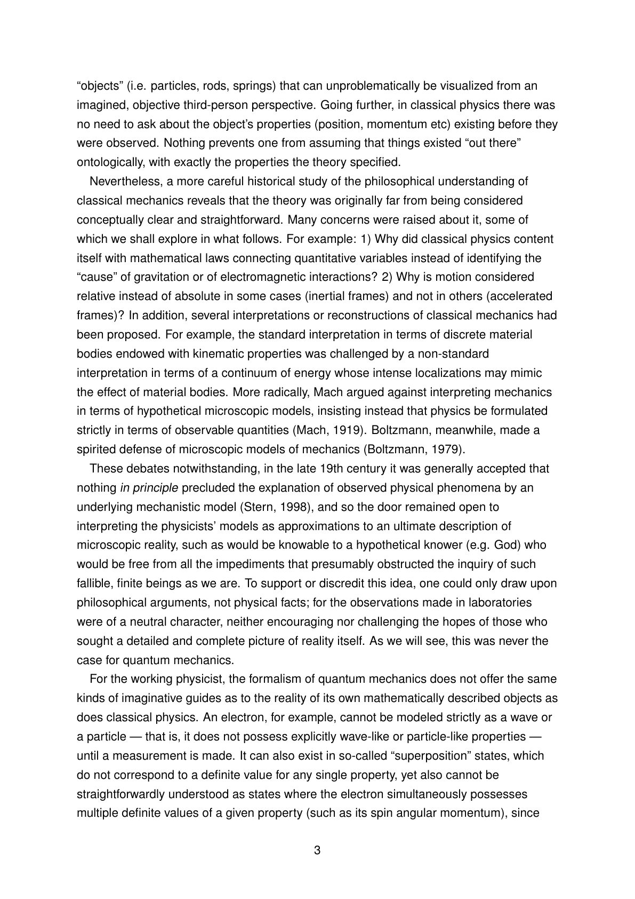
<figcaption class="paper-figure-caption"><b>Fig 2.</b> Low-resolution page preview, page 3</figcaption>
</figure>
<figure class="paper-figure-card">
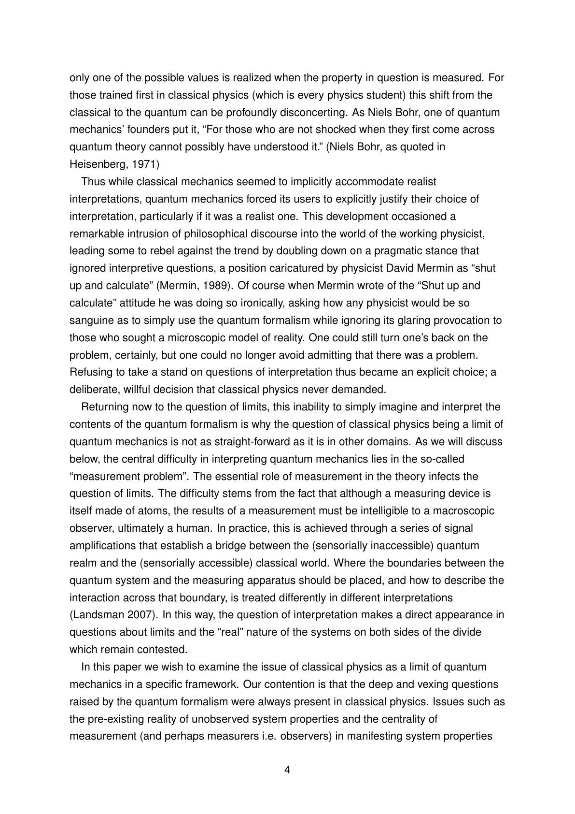
<figcaption class="paper-figure-caption"><b>Fig 3.</b> Low-resolution page preview, page 4</figcaption>
</figure>
<figure class="paper-figure-card">
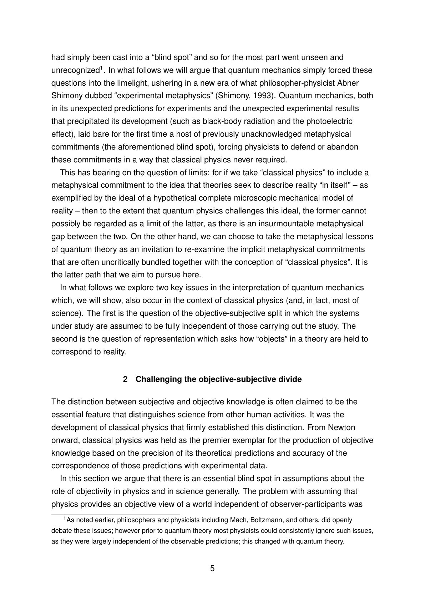
<figcaption class="paper-figure-caption"><b>Fig 4.</b> Low-resolution page preview, page 5</figcaption>
</figure>
<figure class="paper-figure-card">
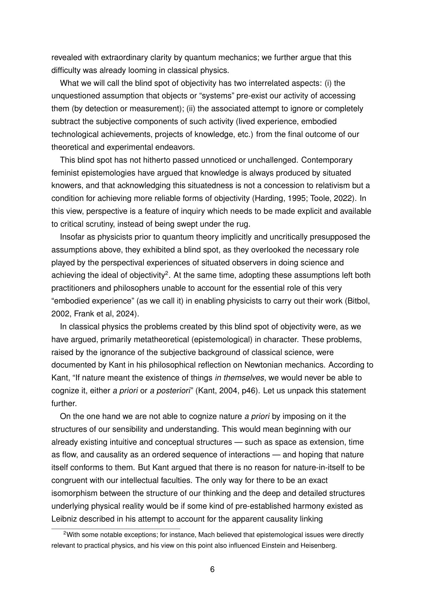
<figcaption class="paper-figure-caption"><b>Fig 5.</b> Low-resolution page preview, page 6</figcaption>
</figure>
</div>

<p><strong>Summary.</strong> This paper argues that the deep philosophical questions surrounding quantum mechanics—such as the measurement problem and the observer's role—were already present in classical physics. By analyzing the formalisms, the authors suggest that QM serves as a catalyst, forcing physicists to confront the implicit metaphysical assumptions about objectivity that were previously ignored. It advocates for a reconceptualization of physics that incorporates the role of the observer and the context of measurement.</p>
<p><strong>Why it may be interesting.</strong> It is highly relevant as it addresses the foundational interpretation of quantum theory, which underpins all applications in AMO and quantum optics, by questioning the very definition of 'objective' physical reality.</p>
<details>
<summary>Detailed structure</summary>
<p><strong>Main problem.</strong> The paper challenges the conventional understanding of classical physics as a mere low-action limit of quantum mechanics by arguing that deep philosophical issues were latent in classical theory all along.</p>
<p><strong>Main result.</strong> Quantum mechanics does not fundamentally break with classical physics; rather, it forces a re-examination of the implicit metaphysical assumptions regarding objectivity and the observer/system split.</p>
<p><strong>Method.</strong> The authors employ a philosophical and conceptual analysis, comparing the formalisms of QM and classical physics, and drawing parallels with modern interpretations like QBism and metrology.</p>
<p><strong>Model / system.</strong> The primary models are Quantum Mechanics (QM) and classical physics. The discussion centers on the conceptual boundary between the quantum system and the classical measuring apparatus.</p>
<p><strong>Key observables.</strong> The key diagnostic is the conceptual difficulty in defining the measurement boundary and the nature of objective reality.</p>
<p><strong>Important parameters / regimes.</strong> Planck's constant (h) and the concept of the low-action limit are central parameters, alongside the philosophical concepts of objectivity and subjectivity.</p>
<p><strong>Assumptions / limitations.</strong> The paper assumes that the formalisms of QM and classical physics are useful tools for exposing underlying metaphysical commitments, rather than being perfect descriptions of reality.</p>
<p><strong>Paper structure.</strong> The paper progresses by first examining the classical limit concept, then detailing the interpretive difficulties (measurement problem, subject-object split), and finally proposing alternative frameworks like QBism and re-evaluating objectivity through metrology.</p>
</details>
<details>
<summary>Abstract</summary>
<p>Quantum mechanics is justifiably held to be the most successful physical theory ever created; yet no universally accepted interpretation of its mathematical formalism exists after a century of debate. We examine the specific claim that classical physics stands as the low-action limit of quantum mechanics, arguing that the deep interpretive difficulties exposed by the quantum formalism, the measurement problem, the subject-object divide, and the nature of scientific representation, were already latent in classical physics, constituting what we call a blind spot of objectivity. Taking quantum theory as an invitation to re-examine the implicit metaphysical commitments bundled with 'classical physics', we explore two key issues-the objective/subjective split and the nature of theoretical representation-and argue that quantum mechanics does not represent a break with classical physics per se but rather brings previously unacknowledged philosophical assumptions into the limelight. We discuss the London-Bauer interpretation and QBism as exemplars of interpretations that embrace this broader reconceptualisation.</p>
</details>
<p><sub><a href="#top">↑ back to top</a></sub></p>

<p><a id="paper-2609.36431"></a></p>
<h3 id="transverse-momentum-as-the-counter-diabatic-generator-in-bent-waveguide-couplers"><a href="http://arxiv.org/abs/2609.36431v1">Transverse momentum as the counter-diabatic generator in bent waveguide couplers</a></h3>
<p><strong>Authors:</strong> Yu-kai Lee, Shuo-Yen Tseng<br>
<strong>Type:</strong> theory · <strong>Category:</strong> other · <strong>PDF:</strong> <a href="https://arxiv.org/pdf/2609.36431v1">https://arxiv.org/pdf/2609.36431v1</a><br>
<strong>Analysis basis:</strong> full PDF text, analyzed in chunks
<strong>Topic relevance:</strong> <code>analog quantum simulation</code> <strong>2/5</strong> · <code>methods for driven-dissipative</code> <strong>2/5</strong> · <code>Keldysh / 2PI / non-Gaussian methods</code> <strong>1/5</strong> · <code>correlated / nonlocal dissipation</code> <strong>1/5</strong> · <code>driven-dissipative phase transition</code> <strong>1/5</strong> · <code>interference shaping light</code> <strong>1/5</strong> · <code>quantum measurements</code> <strong>1/5</strong></p>
<div class="figure-strip-hint">↔ Scroll figures horizontally</div>
<div class="paper-figures-scroll">
<figure class="paper-figure-card">
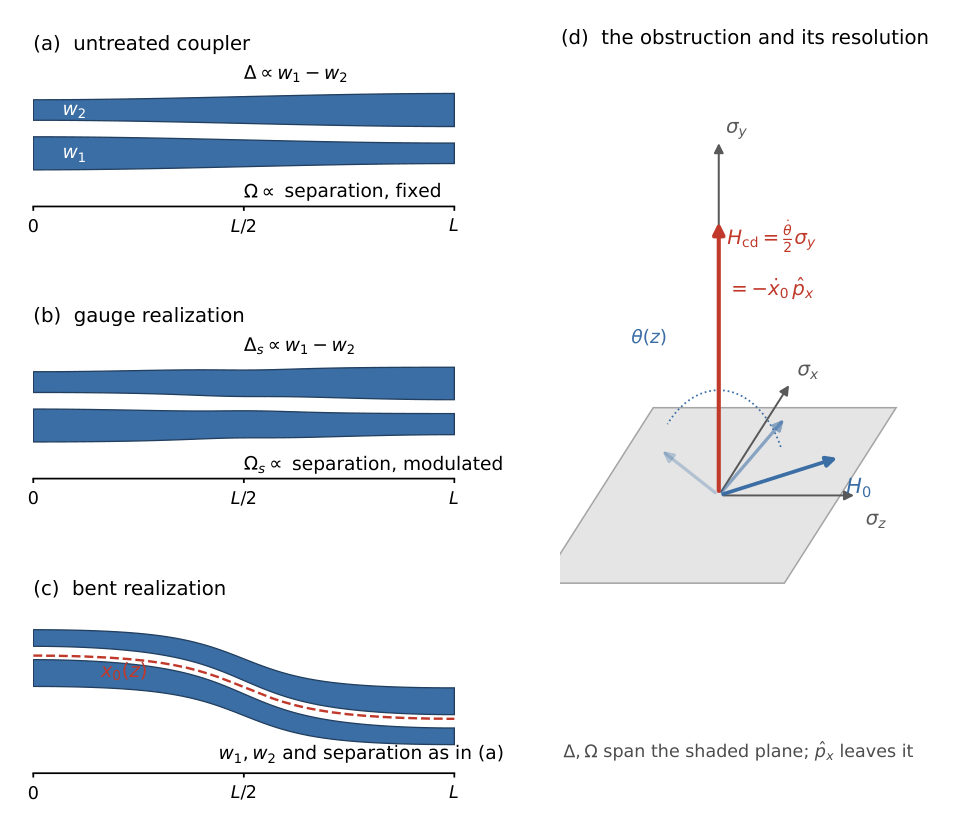
<figcaption class="paper-figure-caption"><b>Fig 1.</b> FIG. 1. Schematic of the coupler geometries, drawn to scale from the facet-matched designs of</figcaption>
</figure>
<figure class="paper-figure-card">
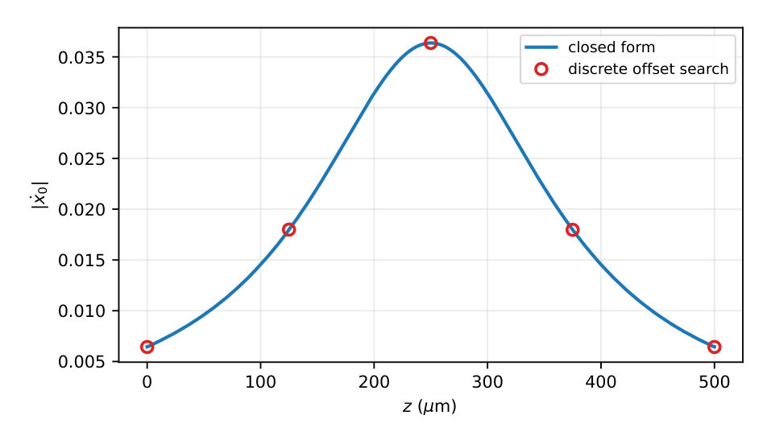
<figcaption class="paper-figure-caption"><b>Fig 2.</b> FIG. 2. Axis slope from Eq. (18) compared with a direct numerical offset search, evaluated at five</figcaption>
</figure>
<figure class="paper-figure-card">
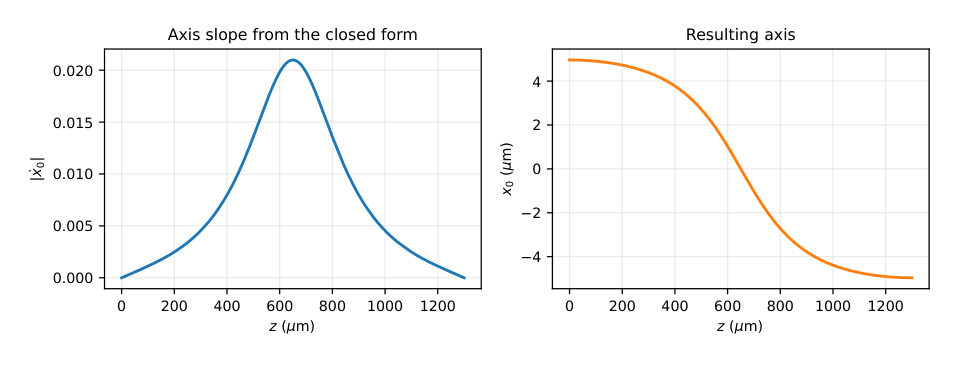
<figcaption class="paper-figure-caption"><b>Fig 3.</b> FIG. 3. Axis slope from Eq. (18) for the facet-matched taper, and the axis obtained by integrating</figcaption>
</figure>
<figure class="paper-figure-card">
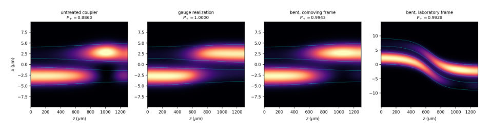
<figcaption class="paper-figure-caption"><b>Fig 4.</b> FIG. 4. Propagated intensity at L = 1300 µm with core boundaries overlaid. From left: the</figcaption>
</figure>
<figure class="paper-figure-card">
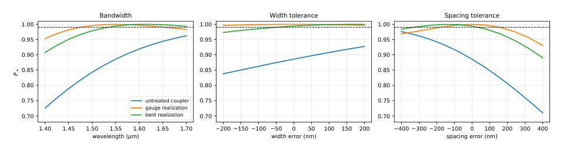
<figcaption class="paper-figure-caption"><b>Fig 5.</b> FIG. 5. Supermode fidelity against wavelength and against the two fabrication error directions, for</figcaption>
</figure>
</div>

<p><strong>Summary.</strong> This paper analyzes mode-evolution couplers, demonstrating that achieving perfect adiabatic light transfer requires a Counter-Diabatic (CD) driving term. The authors prove that the transverse momentum ($\hat{p}_x$) supplies this necessary term when the coupler axis is bent. This allows them to analytically design the required bending profile, achieving high supermode fidelity comparable to other advanced control methods.</p>
<p><strong>Why it may be interesting.</strong> This work provides a concrete, physical realization of a theoretical concept (CD driving) in a photonic system, showing how geometric manipulation (bending) can compensate for nonadiabatic losses, which is highly relevant to quantum optics and integrated photonics.</p>
<details>
<summary>Detailed structure</summary>
<p><strong>Main problem.</strong> The paper addresses the challenge of achieving high-fidelity, fast mode conversion in optical couplers by implementing the Counter-Diabatic (CD) protocol.</p>
<p><strong>Main result.</strong> The transverse momentum ($\hat{p}_x$) is identified as the necessary and sufficient generator for the CD term in bent waveguide couplers, allowing for an analytical determination of the required axis slope.</p>
<p><strong>Method.</strong> The authors use a Hamiltonian approach, comparing the required CD term ($\propto \sigma_y$) with the terms available from geometric control ($\Delta, \Omega$), and deriving the required spatial profile from the momentum operator.</p>
<p><strong>Model / system.</strong> The system is a two-mode optical coupler governed by coupled-mode equations analogous to the time-dependent Schrödinger equation. The evolution is analyzed using supermode basis states, with the Hamiltonian depending on detuning ($\Delta$) and coupling ($\Omega$).</p>
<p><strong>Key observables.</strong> Supermode fidelity ($P_+$), which quantifies the efficiency of light transfer, and the required axis slope $\dot{x}_0(z)$.</p>
<p><strong>Important parameters / regimes.</strong> The rate of change of the mixing angle ($\dot{	heta}$), the supermode splitting ($\Deltaeta$), and the geometric parameters ($\Delta, \Omega$).</p>
<p><strong>Assumptions / limitations.</strong> The analysis is restricted to a two-level approximation and is derived assuming the coupling mechanism is dominated by the transverse momentum's effect.</p>
<p><strong>Figures summary.</strong> Figures compare the supermode fidelity for three coupler types (untreated, gauge realization, bent realization) under fabrication errors, showing the bent realization achieves near-unity fidelity.</p>
<p><strong>Paper structure.</strong> The paper first establishes the need for a CD term ($\propto \sigma_y$) that cannot be generated by standard geometric parameters ($\Delta, \Omega$). It then demonstrates that transverse momentum ($\hat{p}_x$) supplies this term, leading to a closed-form expression for the required axis slope, which is verified against numerical simulations.</p>
</details>
<details>
<summary>Abstract</summary>
<p>Bending the axis of a mode-evolution coupler suppresses the nonadiabatic coupling between its supermodes, and bent couplers of this kind were recently shown to realize the counter-diabatic (CD) protocol. Here we identify the operator responsible. Rigid lateral displacement of a waveguide structure is generated by the transverse momentum $\hat p_x$, whose diagonal matrix elements vanish in a real supermode basis and whose off-diagonal element is purely imaginary; in a two-mode system such an operator is proportional to $\sy$. The CD term of a two-waveguide coupler is itself proportional to $\sy$, while the detuning and the coupling, the two parameters set by the waveguide widths and spacing, lie in the $σ_z$--$σ_x$ plane and cannot produce it. The transverse momentum is therefore the CD generator of the bent coupler, by necessity rather than by design. Equating the term it supplies to the nonadiabatic coupling gives the axis slope in closed form as a ratio of two matrix elements of the unperturbed supermodes at a single cross section, which a commutator identity recasts in coupled-mode variables as $\dot{\xo}=\dotθ/(γ\dbeta^{2})$. The expression agrees with the numerical offset search to $0.3\%$ and requires no search. Beam propagation simulations confirm the design and compare it, for the first time, with the CD protocol realized by unitary transformation in a straight coupler built from the same reference structure. The two devices reach $0.994$ and $1.000$ supermode fidelity where the untreated coupler reaches $0.886$, and agree in bandwidth and fabrication tolerance, while their internal trajectories differ by exactly the frame transformation that relates them.</p>
</details>
<p><sub><a href="#top">↑ back to top</a></sub></p>

<p><a id="paper-2609.37946"></a></p>
<h3 id="emergent-activity-powers-a-path-to-chaos-for-pairs-of-acoustically-trapped-spheres"><a href="http://arxiv.org/abs/2609.37946v1">Emergent activity powers a path to chaos for pairs of acoustically trapped spheres</a></h3>
<p><strong>Authors:</strong> Matthew K. Gronert, Ben Cao, Ella M. King, David G. Grier<br>
<strong>Type:</strong> both · <strong>Category:</strong> statistical mechanics · <strong>PDF:</strong> <a href="https://arxiv.org/pdf/2609.37946v1">https://arxiv.org/pdf/2609.37946v1</a><br>
<strong>Analysis basis:</strong> full PDF text, analyzed in chunks
<strong>Topic relevance:</strong> <code>driven-dissipative phase transition</code> <strong>2/5</strong> · <code>non-equilibrium universality</code> <strong>2/5</strong> · <code>Frenkel-Kontorova</code> <strong>1/5</strong> · <code>analog quantum simulation</code> <strong>1/5</strong> · <code>correlated / nonlocal dissipation</code> <strong>1/5</strong></p>
<div class="figure-strip-hint">↔ Scroll figures horizontally</div>
<div class="paper-figures-scroll">
<figure class="paper-figure-card">
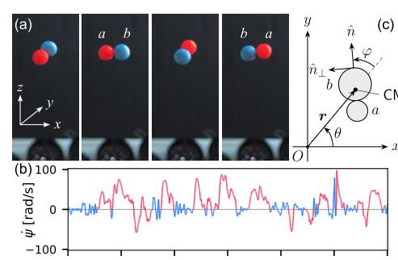
<figcaption class="paper-figure-caption"><b>Fig 1.</b> FIG. 1. (a) Video sequence [9] at 67 ms intervals of a pair of millimeter-scale beads, a and b, spontaneously spinning around the ˆz axis of an acoustic levitator. (b) Measured ro- tation rate, ˙ψ(t) = ˙φ(t) + ˙θ(t), colored by dynamical state (red: spinning, at least one full rotation, blue: rocking) for another pair of beads with a = (0.895 ± 0.005) mm and b = (0.930 ± 0.005) mm. (c) Geometry: The origin, O, is centered on the trap. The beads’ center of mass (CM) is dis- placed from O by r at angle θ relative to ˆx. The pair’s axis, ˆn, points from a to b and makes angle φ with respect to ˆr. The transverse unit vector is ˆn⊥= ˆz × ˆn.</figcaption>
</figure>
<figure class="paper-figure-card">
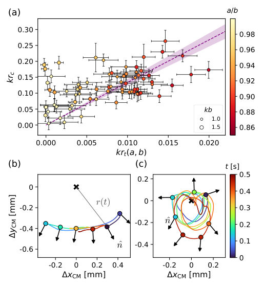
<figcaption class="paper-figure-caption"><b>Fig 2.</b> FIG. 2. (a) Static equilibrium: measured CM displacement, rc, of pairs of EPS beads versus predictions, rt(a, b), for a trap with f = 1. The diameter of each plot symbol is pro- portional to kb; color indicates a/b. Linear regression yields f = 0.075 ± 0.006 for the trap’s aspect ratio. (b) Libra- tion: measured CM trajectory, r(t), relative to the trap (×), of a pair of beads actively rocking: a = (1.242 ± 0.005) mm, b = (1.988±0.003) mm. (c) Spinning: a = (1.317±0.005) mm, b = (1.529±0.005) mm. Color in (b) and (c) indicates elapsed time, circles mark representative data points, and arrows show the measured pair orientation, ˆn, at those times.</figcaption>
</figure>
<figure class="paper-figure-card">
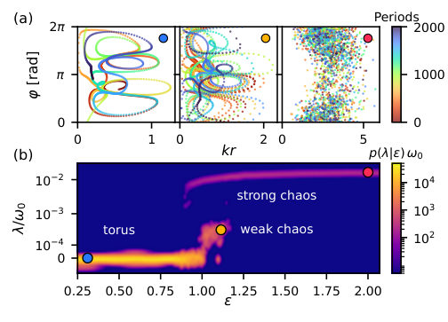
<figcaption class="paper-figure-caption"><b>Fig 3.</b> FIG. 3. (a) Poincar´e sections in the (kr, φ) plane at ε = 0.31 (torus), 1.11 (weak chaos) and 2.00 (strong chaos), given ka = 0.35, kb = 1.5 and ζ = 0.002. Points are colored by period number. (b) Probability density, p(λ | ε), of the largest Lyapunov exponent, λ, (on an arcsinh-scaled axis with linear width 10−4) for random initial conditions. Plot symbols cor- respond to trajectories in (a).</figcaption>
</figure>
</div>

<p><strong>Summary.</strong> This work models the dynamics of two acoustically trapped spheres, demonstrating that non-reciprocal forces can drive the system from a stable, passive state into complex, deterministic chaos. The transition follows a predictable route through a quasiperiodic torus, providing a fundamental example of how non-equilibrium physics can generate complex dynamics without external noise or self-propulsion.</p>
<p><strong>Why it may be interesting.</strong> The mechanism of chaos generation—driven by non-reciprocal forces and dissipation in a classical mechanical system—provides a clean, non-quantum analogue for understanding how complex, non-equilibrium dynamics can emerge in many-body systems.</p>
<details>
<summary>Detailed structure</summary>
<p><strong>Main problem.</strong> The paper investigates the emergence of autonomous, non-steady activity and the subsequent transition to deterministic chaos in a pair of acoustically trapped spheres.</p>
<p><strong>Main result.</strong> The system exhibits a clear, noise-free path from a passive, stable state to a quasiperiodic torus, and finally into deterministic chaos, driven solely by non-reciprocal wave scattering forces.</p>
<p><strong>Method.</strong> The analysis combines theoretical modeling using coupled equations of motion with experimental validation of the observed dynamic regimes.</p>
<p><strong>Model / system.</strong> The system consists of two solid spheres trapped in a standing acoustic wave, whose dynamics are governed by coupled equations involving trapping potentials, drag forces, and non-reciprocal forces arising from size mismatch.</p>
<p><strong>Key observables.</strong> Emergent activity (intermittent spinning/twitching), Lyapunov exponent ($\lambda$), Poincaré sections, and the system's asymptotic state (passive, quasiperiodic, chaotic).</p>
<p><strong>Important parameters / regimes.</strong> The dimensionless activity number $S(a, b)$, the non-reciprocal force threshold $F_c$, and the dimensionless distance from threshold $\epsilon$.</p>
<p><strong>Assumptions / limitations.</strong> The model relies on linearizing equations of motion about equilibrium and uses approximations for wave-mediated interactions, though the qualitative picture is claimed to be robust to higher-order corrections.</p>
<p><strong>Figures summary.</strong> Figures illustrate the transition through Poincaré sections, showing the progression from a stable torus ($\epsilon=0.31$) to weak chaos ($\epsilon=1$).</p>
<p><strong>Paper structure.</strong> The paper establishes the governing equations, analyzes the stability of the passive state using bifurcation theory, maps out the transition from stable equilibrium to Hopf bifurcation (librations), and finally characterizes the route to chaos via quasiperiodicity.</p>
</details>
<details>
<summary>Abstract</summary>
<p>Pairs of spheres sharing an acoustic trap sometimes spin intermittently despite having no self-propulsion, no obvious power source, and no symmetry-breaking mechanism, switching between rocking and spinning within a single trajectory. Nonreciprocal wave scattering powers this emergent activity, and drag shapes their dynamics by coupling rotations to translations. Mismatched pairs can pass through a supercritical Hopf bifurcation into a quasiperiodic torus on which the pair's orbit reverses regularly and, farther from equilibrium, into deterministic chaos. Experiments motivate this mechanism and share its qualitative signatures; simulations reveal a full noise-free route from passivity to chaos, and suggest how analogous dynamics can emerge in other active-matter systems.</p>
</details>
<p><sub><a href="#top">↑ back to top</a></sub></p>

<p><a id="paper-2609.37746"></a></p>
<h3 id="optical-fourier-architecture-for-universal-nonlinear-functions"><a href="http://arxiv.org/abs/2609.37746v1">Optical Fourier Architecture for Universal Nonlinear Functions</a></h3>
<p><strong>Authors:</strong> Martin F. X. Mauser, Joshua Morris, Sara Galatro, Philip Walther, Borivoje Dakic<br>
<strong>Type:</strong> theory · <strong>Category:</strong> other · <strong>PDF:</strong> <a href="https://arxiv.org/pdf/2609.37746v1">https://arxiv.org/pdf/2609.37746v1</a><br>
<strong>Analysis basis:</strong> full PDF text, analyzed in chunks
<strong>Topic relevance:</strong> <code>analog quantum simulation</code> <strong>2/5</strong> · <code>interference shaping light</code> <strong>2/5</strong> · <code>methods for driven-dissipative</code> <strong>2/5</strong></p>
<div class="figure-strip-hint">↔ Scroll figures horizontally</div>
<div class="paper-figures-scroll">
<figure class="paper-figure-card">
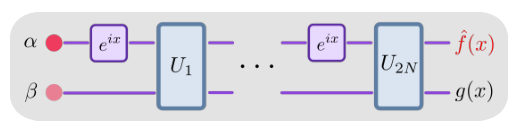
<figcaption class="paper-figure-caption"><b>Fig 1.</b> FIG. 1: Optical circuit ansatz. A 2 × 2 linear optical circuit acts on a fixed input state and evaluates the N-harmonic Fourier series ˆf(x) for input x, encoded by 2N repeating tunable single-mode phase shifters that specify x and fixed MZIs.</figcaption>
</figure>
<figure class="paper-figure-card">
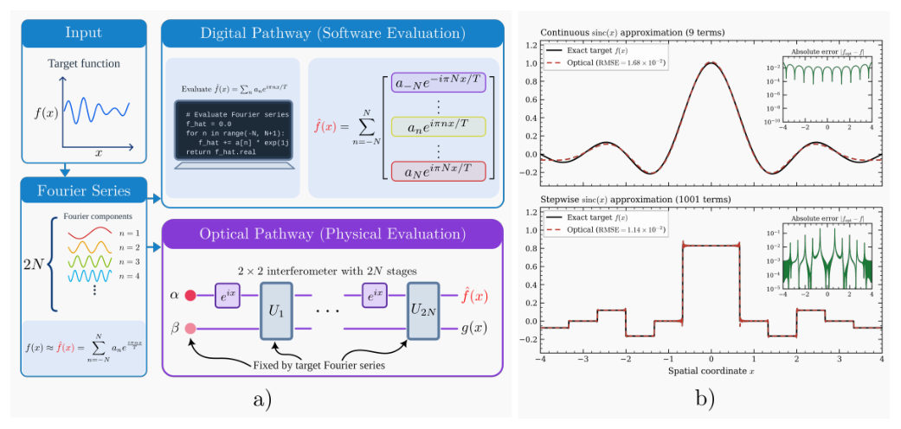
<figcaption class="paper-figure-caption"><b>Fig 2.</b> FIG. 2: Optical encoding of a function. (a) Conceptual compilation pipeline: an arbitrary target function is approximated by a truncated Fourier series, with the quality of the approximation depending on the number of terms and the target function. Given any such series, we generate by algebraic spectral factorisation a sequence of MZIs and single-mode phase shifters that, when acting on a fixed optical input, produce the desired approximating function output ˆf(x). (b) Simulated function approximation: Up: the smooth target sinc(x) function is faithfully reproduced by the coherent optical system using a modest circuit depth. Down: approximation of a stepwise quantized sinc(x) function...</figcaption>
</figure>
<figure class="paper-figure-card">
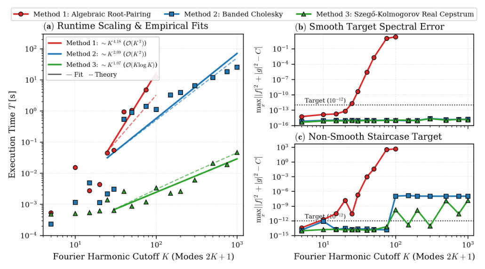
<figcaption class="paper-figure-caption"><b>Fig 3.</b> FIG. 3: Comprehensive benchmark of spectral factorisation algorithms. (a) Execution runtime scaling on a log-log scale. Empirical benchmark measurements (markers) are fitted to asymptotic power laws T(K) ∝Kα (solid lines), with respect to theoretical runtime expectation (dashed lines). Hereby, the algebraic root-pairing scales as ∼K4.18 before diverging, while the banded Cholesky and Szeg˝o-Kolmogorov scale with ∼K2.09 and ∼K1.07 respectively, closely matching their theoretical scaling. (b) Spectral unitary residual ∥C −|f|2 −|g|2∥∞on a smooth Gaussian-mixture target function. Both Cholesky and Szeg˝o-Kolmogorov sustain uniform machine-precision accuracy across all examined orders, whereas...</figcaption>
</figure>
</div>

<p><strong>Summary.</strong> This work presents a deterministic, lossless method to build an optical circuit that computes any function represented by a finite Fourier series. By leveraging spectral factorization and Cholesky decomposition, the authors construct the necessary optical unitaries layer-by-layer. This establishes a universal, scalable foundation for nonlinear optical computation using integrated photonics.</p>
<p><strong>Why it may be interesting.</strong> While the core physics is in optics, the rigorous mathematical machinery—spectral factorization, Toeplitz matrix decomposition, and deterministic circuit synthesis—is highly relevant to quantum information theory and quantum computation, particularly in photonic quantum computing architectures.</p>
<details>
<summary>Detailed structure</summary>
<p><strong>Main problem.</strong> The paper addresses the challenge of evaluating an arbitrary finite Fourier series using only linear optical components, aiming to achieve universal, deterministic nonlinear optical computing.</p>
<p><strong>Main result.</strong> It proves that such a lossless optical circuit always exists and provides an $O(N)$ depth construction method for an $N$-harmonic expansion.</p>
<p><strong>Method.</strong> The construction relies on an exact algebraic method derived from spectral factorization, which requires finding a complementary polynomial $g(z)$ such that $|f(z)|^2 + |g(z)|^2 = C$.</p>
<p><strong>Model / system.</strong> The physical system is a two-mode ($2 	imes 2$) linear optical circuit implemented on integrated photonic circuits. The computation is modeled by the evolution of a fixed input state $|\phi
angle$ through a sequence of tunable phase shifters and fixed unitaries.</p>
<p><strong>Key observables.</strong> The optical amplitude in a fixed output mode, proportional to the target function $\hat{f}(z)$.</p>
<p><strong>Important parameters / regimes.</strong> The circuit depth scales as $O(N)$ for an $N$-harmonic expansion; the input power $C$ must be greater than the maximum value of $|\hat{f}(z)|^2$ on the unit circle.</p>
<p><strong>Assumptions / limitations.</strong> The method assumes the target function can be represented by a finite Fourier series and operates entirely on classical coherent optical amplitudes, avoiding nonlinear materials.</p>
<p><strong>Figures summary.</strong> Figure 1 illustrates the general optical circuit ansatz. Figure 3 benchmarks three spectral factorization algorithms (Algebraic root-pairing, Cholesky, Szegő-Kolmogorov) comparing runtime scaling and spectral unitary residuals for smooth and staircase functions.</p>
<p><strong>Paper structure.</strong> The paper develops the theory by first establishing the necessary algebraic condition ($|f|^2 + |g|^2 = C$) using the Fejér-Riesz theorem. It then details the deterministic computation of $g(z)$ via Cholesky factorization of a Toeplitz matrix, followed by an iterative, layer-by-layer construction of the required unitary optical circuit.</p>
</details>
<details>
<summary>Abstract</summary>
<p>We introduce an exact algebraic architecture that evaluates an arbitrary finite Fourier series using a two-mode ($2 \times 2$) linear optical circuit, with the only tunable components being single-mode phase shifters encoding the function argument. We prove that such a circuit must exist for every Fourier series and derive an analytical method for its construction based on spectral factorisation. The resulting optical system exhibits an $\mathcal{O}(N)$ depth for an $N$-harmonic expansion, executing function evaluations in the passive optical time-of-flight. Finally, we validate our claims numerically, demonstrating that even for sequences with thousands of Fourier terms, our proposed circuit construction correctly synthesises continuous and discontinuous nonlinear functions. Our architecture thus provides a universal, deterministic foundation for single-variable nonlinear optical computing on integrated photonic platforms.</p>
</details>
<p><sub><a href="#top">↑ back to top</a></sub></p>

<p><a id="paper-2609.36232"></a></p>
<h3 id="autonomous-self-harmonic-drift-in-langevin-dynamics-causes-a-compaction-of-underlying-domain-for-the-density-of-stochastic-localization"><a href="http://arxiv.org/abs/2609.36232v1">Autonomous self-harmonic drift in Langevin dynamics causes a compaction of underlying domain for the density of Stochastic Localization</a></h3>
<p><strong>Authors:</strong> Ken Sekimoto<br>
<strong>Type:</strong> theory · <strong>Category:</strong> statistical mechanics · <strong>PDF:</strong> <a href="https://arxiv.org/pdf/2609.36232v1">https://arxiv.org/pdf/2609.36232v1</a><br>
<strong>Analysis basis:</strong> full PDF text, analyzed in chunks
<strong>Topic relevance:</strong> <code>Keldysh / 2PI / non-Gaussian methods</code> <strong>2/5</strong> · <code>methods for driven-dissipative</code> <strong>2/5</strong> · <code>quantum measurements</code> <strong>1/5</strong></p>
<div class="figure-strip-hint">↔ Scroll figures horizontally</div>
<div class="paper-figures-scroll">
<figure class="paper-figure-card">

<figcaption class="paper-figure-caption"><b>Fig 1.</b> Low-resolution page preview, page 2</figcaption>
</figure>
<figure class="paper-figure-card">

<figcaption class="paper-figure-caption"><b>Fig 2.</b> Low-resolution page preview, page 3</figcaption>
</figure>
<figure class="paper-figure-card">

<figcaption class="paper-figure-caption"><b>Fig 3.</b> Low-resolution page preview, page 4</figcaption>
</figure>
<figure class="paper-figure-card">

<figcaption class="paper-figure-caption"><b>Fig 4.</b> Low-resolution page preview, page 5</figcaption>
</figure>
</div>

<p><strong>Summary.</strong> This theoretical paper connects Langevin dynamics with self-harmonic drift to the mathematical concept of Stochastic Localization. By analyzing the dynamics, the authors show that the requirement of autonomous drift causes the underlying probability domain to compactify onto a sphere. This comparison expands the theoretical scope of Stochastic Localization by providing a physical, constrained system realization.</p>
<p><strong>Why it may be interesting.</strong> The connection drawn between classical stochastic dynamics (Langevin/drift) and geometric concepts like Stochastic Localization provides a novel, physically motivated context for mathematical tools used in data science and geometry.</p>
<details>
<summary>Detailed structure</summary>
<p><strong>Main problem.</strong> The paper compares the dynamics of Langevin systems with autonomous self-harmonic drift to the concept of Stochastic Localization (SL) to understand the mechanism of domain compaction.</p>
<p><strong>Main result.</strong> The autonomous requirement in the self-harmonic drift case forces the probability distribution's domain to compactify onto the surface of a sphere, linking it to the mathematical framework of SL.</p>
<p><strong>Method.</strong> The analysis involves comparing functional Stochastic Differential Equations (SDEs) governing the probability densities in both frameworks, utilizing martingale properties.</p>
<p><strong>Model / system.</strong> The primary model is Langevin dynamics with a self-harmonic drift acting on classical spins constrained to a hypersphere ($S^{n-1}$). This is compared to the general Stochastic Localization framework defined on Euclidean space ($\mathbb{R}^n$).</p>
<p><strong>Key observables.</strong> The asymptotic convergence of the stochastic density to a delta-function ($\delta(\hat{x} - \hat{x}^*)$) and the relationship between the drift term and the barycenter of the distribution.</p>
<p><strong>Important parameters / regimes.</strong> The dimension $n$, the time $t$, and the initial density $p_0(\hat{x})$ or $p_0(\mathbf{x})$.</p>
<p><strong>Assumptions / limitations.</strong> The self-harmonic drift is assumed to be autonomous, and the comparison relies on the martingale property of the underlying stochastic process.</p>
<p><strong>Figures summary.</strong> A comparison table (TABLE I) summarizes the correspondences between the two theoretical frameworks, detailing the mathematical links between the two types of stochastic processes.</p>
<p><strong>Paper structure.</strong> The paper introduces the problem by defining the two systems (Self-harmonic Drift and SL), develops the mathematical machinery using SDEs and martingales, derives the key results showing the equivalence and the compactification mechanism, and concludes by discussing the implications for extending SL.</p>
</details>
<details>
<summary>Abstract</summary>
<p>Our recent research on Langevin dynamics with self-harmonic drift and classical spins has revealed a strong connection to <code>Stochastic Localization," a concept attracting attention in the fields of mathematical geometry and data science. Roughly speaking, the former can be viewed as a version of the latter in which the $n$-dimensional Euclidean space - the domain of the probability distribution function appearing in the latter - is</code>compactified'' to the surface of an $n$-dimensional sphere. By comparing the two frameworks, we argue that this compactification is a consequence of requiring the drift to be autonomous. The relationship between the two approaches may expand the scope of Stochastic Localization.</p>
</details>
<p><sub><a href="#top">↑ back to top</a></sub></p>

<p><a id="paper-2609.37668"></a></p>
<h3 id="defect-organization-in-coexisting-hexagonal-and-square-lattices-on-ellipsoids"><a href="http://arxiv.org/abs/2609.37668v1">Defect Organization in Coexisting Hexagonal and Square Lattices on Ellipsoids</a></h3>
<p><strong>Authors:</strong> Wenyu Liu, Han Xie, Baohui Li, Jeff Z. Y. Chen, Yao Li<br>
<strong>Type:</strong> theory · <strong>Category:</strong> statistical mechanics · <strong>PDF:</strong> <a href="https://arxiv.org/pdf/2609.37668v1">https://arxiv.org/pdf/2609.37668v1</a><br>
<strong>Analysis basis:</strong> full PDF text, analyzed in chunks
<strong>Topic relevance:</strong> <code>analog quantum simulation</code> <strong>2/5</strong> · <code>Frenkel-Kontorova</code> <strong>1/5</strong> · <code>driven-dissipative phase transition</code> <strong>1/5</strong> · <code>non-equilibrium universality</code> <strong>1/5</strong></p>
<div class="figure-strip-hint">↔ Scroll figures horizontally</div>
<div class="paper-figures-scroll">
<figure class="paper-figure-card">

<figcaption class="paper-figure-caption"><b>Fig 1.</b> FIG. 1. State diagram of mixed Hex-Sq lattices on ellipsoidal surfaces as functions of reduced density ρ∗and aspect ratio A/B. Red, purple, and gray backgrounds denote the Hex-dominant, Sq-dominant, and intermediate regimes, respectively. Roman numerals identify (i) Hex scars (see Fig. 2), (ii) coexistence of Hex scars and Sq-rich rectangular domains (see Fig. 7), (iii) Sq-rich rectangular domains (see Fig. 4), (iv) coexistence of Sq-rich rectangular domains and counter domains (see Fig. 9), (v) counter domains (see Fig. 8), (vi) vertex-contacted domains (see Fig. 6), (vii) biangular domains (see Fig. 10), (viii) asymmetric mixed state, (ix) Hex- rich triangular domains (see Fig. 11), (x)...</figcaption>
</figure>
<figure class="paper-figure-card">

<figcaption class="paper-figure-caption"><b>Fig 2.</b> FIG. 2. Representative Hex-scar configurations corresponding to state (i) in Fig. 1 at ρ∗= 2.10. (a) Spherical reference. (b)– (d) Prolate ellipsoids with A/B = 1.3, 1.5, and 2.0. (e)–(g) Oblate ellipsoids with A/B = 1/1.3, 1/1.4, and 1/2.0. Purple particles mark non-sixfold-coordinated particles. Black, blue, and green curves are visual guides connecting scar centers. The black dashed line connects the two poles, while the red dashed line marks the equatorial plane. The arrow indicates increasing deviation from sphericity, corresponding to increasing prolateness in the upper row and increasing oblateness in the lower row.</figcaption>
</figure>
<figure class="paper-figure-card">

<figcaption class="paper-figure-caption"><b>Fig 3.</b> FIG. 4. Representative Sq-rich rectangular domains in a Hex- dominant background corresponding to state (iii) in Fig. 1 at ρ∗= 2.24 for several aspect ratios A/B. (a) Approximately octahedral arrangement on the sphere. (b)–(d) Prolate configurations with A/B = 1.2, 1.3, and 1.4, respectively, in which the six domains form an increasingly extended polar helix. (e)–(g) Oblate configurations with A/B = 1/1.3, 1/1.6, and 1/1.9, respectively, in which the domains approach and eventually occupy the equatorial belt. Black curves are visual guides connecting the domain centers. Aspect ratios are indicated in the individual panels.</figcaption>
</figure>
<figure class="paper-figure-card">

<figcaption class="paper-figure-caption"><b>Fig 4.</b> FIG. 7. Coexistence of Hex scars and Sq-rich rectangular domains corresponding to state (ii) in Fig. 1. (a) Detailed view of the state-(ii) region in Fig. 1, where Hex scars and Sq-rich rectangular domains coexist. (b)–(f) Representative configurations containing, respectively, 10 scars and 1 domain, 8 scars and 2 domains, 6 scars and 3 domains, 4 scars and 4 domains, and 2 scars and 5 domains.</figcaption>
</figure>
<figure class="paper-figure-card">

<figcaption class="paper-figure-caption"><b>Fig 5.</b> FIG. 6. Vertex-contacted domains (VCD) on prolate ellipsoids corresponding to state (vi) in Fig. 1. (a) Representative side views and an enlarged polar contact region. (b) and (c) Polar views of the contacted domains. (d) Planar projection of the ellipsoidal lattice. Red dots mark locally neutral contacted vertices, and black dashed outlines identify compensating positive defects at lower- curvature latitudes. In the large side views, the defect-free Hex background is omitted and only the defect structures are shown; the accompanying top- and bottom-view insets, where present, retain the complete surface lattice. The same visualization convention is used for all subsequent snapshots.</figcaption>
</figure>
</div>

<p><strong>Summary.</strong> This work explores how the geometry of a curved surface, specifically the variation in Gaussian curvature, dictates the arrangement of defects where two competing crystal lattices (hexagonal and square) coexist. Using simulations on ellipsoids, the authors show that curvature acts as a powerful organizing principle, forcing defects to redistribute to minimize elastic strain energy. This demonstrates that geometric anisotropy can be used to engineer specific, stable defect patterns in condensed matter systems.</p>
<p><strong>Why it may be interesting.</strong> The principles governing defect organization under geometric constraints—where local energy minimization forces global structural reorganization—are highly relevant to understanding phase transitions and defect dynamics in complex quantum materials or patterned quantum systems.</p>
<details>
<summary>Detailed structure</summary>
<p><strong>Main problem.</strong> The study investigates how the interplay between varying surface curvature and competing lattice symmetries (hexagonal and square) dictates the organization and distribution of topological defects in 2D crystalline systems.</p>
<p><strong>Main result.</strong> Nonuniform curvature can actively engineer rich defect patterns by controlling the spatial distribution of topological charge, with prolate vs. oblate geometries leading to distinct defect arrangements.</p>
<p><strong>Method.</strong> The research employs simulated-annealing Langevin dynamics simulations to find the lowest-energy configurations of particles forming mixed lattices on ellipsoidal surfaces.</p>
<p><strong>Model / system.</strong> The system models Hertzian particles forming coexisting hexagonal and square lattices constrained to prolate or oblate ellipsoids, analyzed using a specific interaction potential.</p>
<p><strong>Key observables.</strong> Signed topological-charge surface density ($
ho( heta)$), Gaussian curvature ($K(  heta)$), and the defect-curvature deviation index ($D_{
ho K}$).</p>
<p><strong>Important parameters / regimes.</strong> Ellipsoidal aspect ratio ($A/B$), reduced density ($
ho^*$), and the degree of lattice dominance (Hex-dominant vs. Sq-dominant).</p>
<p><strong>Assumptions / limitations.</strong> The analysis relies on mapping reduced density and aspect ratio, and comparisons are made using the ten lowest-energy configurations from multiple independent annealing runs.</p>
<p><strong>Figures summary.</strong> Figures illustrate state diagrams mapping lattice organization, representative configurations of Hex-scars and Sq-domains on different ellipsoids, and comparisons of charge density vs. curvature profiles.</p>
<p><strong>Paper structure.</strong> The paper systematically analyzes the system by first establishing the physical model and simulation methods, then presenting results across different lattice dominance regimes (Hex/Sq) and contrasting the effects of prolate versus oblate curvature anisotropy.</p>
</details>
<details>
<summary>Abstract</summary>
<p>Curvature and topology jointly organize defects in two-dimensional crystals, but their combined role remains unresolved when competing lattice symmetries coexist with spatially varying curvature. We use simulated-annealing Langevin dynamics to study Hertzian particles forming coexisting hexagonal (Hex) and square (Sq) lattices on prolate and oblate ellipsoids. Mapping reduced density and aspect ratio reveals a broad sequence of scar and domain-based morphologies in both Hex-dominant and Sq-dominant backgrounds. Latitude-resolved comparisons show that Gaussian curvature biases defects toward its maxima under weak deformation. Strong prolateness, however, confines high curvature to small polar caps that cannot independently accommodate all defect motifs. Defects then spread toward lower-curvature latitudes to relieve defect crowding and elastic repulsion. In the Hex-dominant regime, this competition drives vertex-contacted domains with neutralized corner contacts, and compensating positive defects locate away from the poles. The Sq-dominant regime features Hex-rich triangular domains, bridged states, and linear or open scars similarly reorganized by curvature anisotropy. On oblate ellipsoids, the extended equatorial high-curvature belt allows defects to separate azimuthally while remaining curvature-localized. This work elucidates that nonuniform curvature can engineer rich defect patterns by selecting the spatial distribution of topological charge and the connectivity of finite defect motifs.</p>
</details>
<p><sub><a href="#top">↑ back to top</a></sub></p>

<p><a id="paper-2609.38007"></a></p>
<h3 id="improved-estimate-of-local-markovianity-for-quantum-gibbs-states"><a href="http://arxiv.org/abs/2609.38007v1">Improved estimate of local Markovianity for quantum Gibbs states</a></h3>
<p><strong>Authors:</strong> Tai Hsuan Yang<br>
<strong>Type:</strong> theory · <strong>Category:</strong> statistical mechanics · <strong>PDF:</strong> <a href="https://arxiv.org/pdf/2609.38007v1">https://arxiv.org/pdf/2609.38007v1</a><br>
<strong>Analysis basis:</strong> full PDF text, analyzed in chunks
<strong>Topic relevance:</strong> <code>Keldysh / 2PI / non-Gaussian methods</code> <strong>2/5</strong> · <code>methods for driven-dissipative</code> <strong>2/5</strong> · <code>analog quantum simulation</code> <strong>1/5</strong></p>
<div class="figure-strip-hint">↔ Scroll figures horizontally</div>
<div class="paper-figures-scroll">
<figure class="paper-figure-card">

<figcaption class="paper-figure-caption"><b>Fig 1.</b> Low-resolution page preview, page 2</figcaption>
</figure>
<figure class="paper-figure-card">

<figcaption class="paper-figure-caption"><b>Fig 2.</b> Low-resolution page preview, page 3</figcaption>
</figure>
<figure class="paper-figure-card">

<figcaption class="paper-figure-caption"><b>Fig 3.</b> Low-resolution page preview, page 4</figcaption>
</figure>
<figure class="paper-figure-card">

<figcaption class="paper-figure-caption"><b>Fig 4.</b> Low-resolution page preview, page 5</figcaption>
</figure>
<figure class="paper-figure-card">

<figcaption class="paper-figure-caption"><b>Fig 5.</b> Low-resolution page preview, page 6</figcaption>
</figure>
</div>

<p><strong>Summary.</strong> This work provides rigorous, improved estimates for how local quantum correlations decay in quantum Gibbs states. By analyzing the Conditional Mutual Information (CMI) for different interaction types, the authors show that the decay rate depends on the boundary size rather than the volume, which is a significant theoretical advance for characterizing quantum locality.</p>
<p><strong>Why it may be interesting.</strong> The improved, boundary-dependent bounds on CMI are crucial for understanding quantum correlations and locality in thermal quantum many-body systems, which is central to modern condensed matter theory.</p>
<details>
<summary>Detailed structure</summary>
<p><strong>Main problem.</strong> The paper aims to establish improved, quantitative estimates for the local Markovian properties of quantum Gibbs states.</p>
<p><strong>Main result.</strong> It derives specific decay rates for the Conditional Mutual Information (CMI) based on the decay type of the interactions (finite-range, stretched-exponential, or power-law).</p>
<p><strong>Method.</strong> The analysis uses a static approach, bounding the CMI by relating it to a relative-entropy loss, which is then controlled using variational methods and resolvent identities.</p>
<p><strong>Model / system.</strong> The system is a quantum lattice model described by a Hamiltonian $H_{\Lambda}$, and the state is the quantum Gibbs state $
ho_{\Lambda, eta} = e^{-eta H_{\Lambda}} /    ext{Tr} e^{-eta H_{\Lambda}}$.</p>
<p><strong>Key observables.</strong> Conditional Mutual Information (CMI), Relative Entropy Loss ($\delta_R(
ho, \sigma)$), and the cut interaction strength ($g_{A|Ac}$).</p>
<p><strong>Important parameters / regimes.</strong> Inverse temperature ($eta$), separation distance ($r$), and the decay exponents ($\zeta, 	heta$) characterizing the interaction decay.</p>
<p><strong>Assumptions / limitations.</strong> The results hold for fixed positive temperature ($eta > 0$) and rely on bounding the interaction strength across a spatial cut.</p>
<p><strong>Paper structure.</strong> The paper systematically compares its derived bounds (for finite-range, quasi-local, and power-law interactions) against prior work, utilizing variational calculus and resolvent identities to control the relative entropy loss.</p>
</details>
<details>
<summary>Abstract</summary>
<p>We establish improved locally Markovian properties of quantum Gibbs states at every fixed positive temperature. For finite-range interactions of bounded interaction degree, the conditional mutual information (CMI) decays exponentially with separation, with a prefactor exponential in the boundary size. This improves the exponential volume dependence of the local Markov bounds established by Chen and Rouzé \cite{Chen2025}. For exponentially and stretched-exponentially decaying interactions, we obtain stretched-exponential CMI decay with a boundary-dependent prefactor. For power-law interactions, we prove inverse-logarithmic or algebraic decay with polynomial region-size dependence. Our proof is static, in contrast to the dynamical approach of Chen and Rouzé. We compare the Gibbs state with a product state obtained by removing boundary interactions, reducing the CMI bound to a relative-entropy loss that we control using locality estimates.</p>
</details>
<p><sub><a href="#top">↑ back to top</a></sub></p>

<p><a id="paper-2609.36140"></a></p>
<h3 id="magnetic-excitations-of-the-strongly-anisotropic-triangular-xxz-model-a-projected-spin-product-state-approach"><a href="http://arxiv.org/abs/2609.36140v1">Magnetic excitations of the strongly-anisotropic triangular XXZ model: a projected spin-product state approach</a></h3>
<p><strong>Authors:</strong> Achille Mauri, Frédéric Mila<br>
<strong>Type:</strong> theory · <strong>Category:</strong> strongly correlated electrons · <strong>PDF:</strong> <a href="https://arxiv.org/pdf/2609.36140v1">https://arxiv.org/pdf/2609.36140v1</a><br>
<strong>Analysis basis:</strong> full PDF text, analyzed in chunks
<strong>Topic relevance:</strong> <code>Keldysh / 2PI / non-Gaussian methods</code> <strong>2/5</strong> · <code>analog quantum simulation</code> <strong>2/5</strong></p>
<div class="figure-strip-hint">↔ Scroll figures horizontally</div>
<div class="paper-figures-scroll">
<figure class="paper-figure-card">

<figcaption class="paper-figure-caption"><b>Fig 1.</b> FIG. 1. Line of quasi-degenerate projected states at zero longitudinal field for L = 12. The arrows show the sublattice magnetizations in the AFM case in the Y state (black) and in the UD0 state (grey), which are respectively local minima and maxima of the variational energy along the line.</figcaption>
</figure>
<figure class="paper-figure-card">

<figcaption class="paper-figure-caption"><b>Fig 2.</b> FIG. 2. Energy as a function of the canting angle at sublat- tice A. Solid and dashed lines show, respectively, the classical energy and the classical + 1/S energy along the classically- degenerate ground-state manifold for Jxy/Jzz = 0.07. The dots show the minimum energy of a projected spin-product state with fixed canting angle ˜θA = arctan(⟨Sx i ⟩/⟨Sz i ⟩). The bottom panel enlarges the narrow interval of energies separat- ing the Y and the UD0 solutions, and shows results obtained by the projected spin-product approximation for different L.</figcaption>
</figure>
<figure class="paper-figure-card">

<figcaption class="paper-figure-caption"><b>Fig 3.</b> FIG. 3. (a) Variational parameters and longitudinal sublat- tice magnetizations as a function of the magnetic field b, com- puted on an L = 15 cylinder. (b) Theoretical magnetization curve obtained within the projected product-state approxi- mation (solid line), the classical XXZ model (dotted line), and the classical+ LSWT approximation (dashed line). Grey circles show experimental data points from Ref. [10]. The theoretical curves were calculated assuming a gyromagnetic factor gzz = 7.9, Jxy = 0.217 meV, and Jzz = 3.1meV.</figcaption>
</figure>
<figure class="paper-figure-card">

<figcaption class="paper-figure-caption"><b>Fig 4.</b> FIG. 4. Dispersion relations ϵn(k) and matrix elements |⟨n, k|Sz(k)|0⟩|2 within the linearized time-dependent variational principle, calculated on an L = 12 cylinder. The dispersion is represented by solid lines. The matrix elements of the branches are the dashed lines measured from the corresponding solid lines. The dotted curves are dispersions within linear spin-wave theory for b = gzzµBµ0H, gzz = 7.9, Jxy = 0.217 meV, and Jzz = 3.1 meV. In the top-left panel, the mode with strong intensity at the K point is the low-energy gapped pseudo-Goldstone mode.</figcaption>
</figure>
<figure class="paper-figure-card">

<figcaption class="paper-figure-caption"><b>Fig 5.</b> FIG. 5. Dispersion of the excitation modes within the projected spin-wave approximation (white lines) for b = gzzµBµ0H, gzz = 7.9 and Jxy = 0.217 meV, in comparison to inelastic neutron scattering data on KCSO from Ref. [10]. For the spectrum at H = 0.75T, we used the analytical expressions ϵk = b± 1</figcaption>
</figure>
</div>

<p><strong>Summary.</strong> This paper analyzes the magnetic excitations of the triangular XXZ model using a novel projected coherent-state approximation. By restricting the variational space to low-energy Ising configurations, the authors derive the excitation spectrum, showing marked improvements over standard spin-wave theory. This work is crucial for understanding frustrated quantum magnets relevant to materials like cobaltites.</p>
<p><strong>Why it may be interesting.</strong> The use of variational principles on constrained quantum manifolds (projected states) is a powerful technique for strongly correlated systems, offering insights into low-energy excitations beyond simple mean-field treatments.</p>
<details>
<summary>Detailed structure</summary>
<p><strong>Main problem.</strong> The paper investigates the ground-state properties and the excitation spectrum of the spin-1/2 triangular XXZ model, particularly in the regime of strong Ising-like anisotropy.</p>
<p><strong>Main result.</strong> The projected coherent-state approximation significantly improves upon linear spin-wave theory, predicting a low-energy pseudo-Goldstone mode at zero field.</p>
<p><strong>Method.</strong> The authors employ a 'projected' coherent-state approximation, utilizing the Time-Dependent Variational Principle (TDVP) restricted to the low-energy manifold of the triangular Ising antiferromagnet.</p>
<p><strong>Model / system.</strong> The system is the spin-1/2 triangular XXZ model, described by a Hamiltonian involving exchange interactions and a longitudinal magnetic field. The analysis focuses on the highly constrained quantum-Ising limit.</p>
<p><strong>Key observables.</strong> Ground-state ordering, magnetization curve, excitation spectrum (relevant to neutron scattering), and the pseudo-Goldstone mode.</p>
<p><strong>Important parameters / regimes.</strong> Strong Ising-like anisotropy ($\alpha = J_{xy}/J_{zz}$ small), and the longitudinal field $b$ in the range $0 < b < b_c$.</p>
<p><strong>Assumptions / limitations.</strong> The primary assumption is the validity of the projected coherent-state approximation, which is an improvement over standard linear spin-wave theory.</p>
<p><strong>Figures summary.</strong> Figure 12 illustrates the real-space susceptibility matrix $L_{ij}$ as a function of lattice position for different sublattices.</p>
<p><strong>Paper structure.</strong> The work proceeds by first defining the model and the projected approximation. It then analyzes the ground state and magnetization curve, followed by deriving the excitation spectrum via linearization of the TDVP equations to find spin-wave-like excitations.</p>
</details>
<details>
<summary>Abstract</summary>
<p>Recent experiments have sparked interest on the ground-state properties and on the excitation spectrum of the spin-$1/2$ triangular XXZ model with strong Ising-like anisotropy. In this work, we introduce and analyze a ``projected'' coherent-state approximation to the model, constructed by projecting spin-product states onto the low-energy configurations of the triangular Ising antiferromagnet. Within this approximation, we discuss the structure of the ground-state ordering and the magnetization curve under a longitudinal field. We then discuss the excitation spectrum by linearizing equations of motion deriving from a time-dependent variational principle. This leads to a natural description of spin-wave-like excitations within the strongly constrained Hilbert space. At zero field, the variational approximation leads to a very flat landscape of quasi-degenerate states, which results in a low-energy pseudo-Goldstone mode in the excitation spectrum. We compare our results to experimental measurements on the cobaltite K$_{2}$Co(SeO$_{3}$)$_{2}$ (KCSO). Our approximation leads to a dramatic improvement as compared to linear spin-wave theory. However, there remain deviations in the value of the pseudo-Goldstone gap and in the dispersion near $M$ points at low field.</p>
</details>
<p><sub><a href="#top">↑ back to top</a></sub></p>

<p><a id="paper-2609.38124"></a></p>
<h3 id="the-principle-of-minimum-justified-correlation"><a href="http://arxiv.org/abs/2609.38124v1">The Principle of Minimum Justified Correlation</a></h3>
<p><strong>Authors:</strong> John H Van Drie<br>
<strong>Type:</strong> theory · <strong>Category:</strong> statistical mechanics · <strong>PDF:</strong> <a href="https://arxiv.org/pdf/2609.38124v1">https://arxiv.org/pdf/2609.38124v1</a><br>
<strong>Analysis basis:</strong> full PDF text, analyzed in chunks
<strong>Topic relevance:</strong> <code>Keldysh / 2PI / non-Gaussian methods</code> <strong>2/5</strong> · <code>analog quantum simulation</code> <strong>1/5</strong> · <code>quantum measurements</code> <strong>1/5</strong></p>
<div class="figure-strip-hint">↔ Scroll figures horizontally</div>
<div class="paper-figures-scroll">
<figure class="paper-figure-card">

<figcaption class="paper-figure-caption"><b>Fig 1.</b> Low-resolution page preview, page 2</figcaption>
</figure>
<figure class="paper-figure-card">

<figcaption class="paper-figure-caption"><b>Fig 2.</b> Low-resolution page preview, page 3</figcaption>
</figure>
<figure class="paper-figure-card">

<figcaption class="paper-figure-caption"><b>Fig 3.</b> Low-resolution page preview, page 4</figcaption>
</figure>
<figure class="paper-figure-card">

<figcaption class="paper-figure-caption"><b>Fig 4.</b> Low-resolution page preview, page 5</figcaption>
</figure>
<figure class="paper-figure-card">

<figcaption class="paper-figure-caption"><b>Fig 5.</b> Low-resolution page preview, page 6</figcaption>
</figure>
</div>

<p><strong>Summary.</strong> This work unifies entropy, Fisher information, and quantum kinetic energy by showing they all quantify correlation. It derives a key identity linking the kinetic energy difference to the relative Fisher information, supporting a 'Principle of Minimum Justified Correlation.' This suggests that physical systems naturally tend toward the least correlated state consistent with their known constraints.</p>
<p><strong>Why it may be interesting.</strong> It provides a novel, information-theoretic lens through which to view fundamental quantum mechanical constraints, potentially offering a variational principle for deriving physical laws.</p>
<details>
<summary>Detailed structure</summary>
<p><strong>Main problem.</strong> To develop a unified principle connecting Shannon entropy, Fisher information, and quantum kinetic energy as fundamental measures of correlation in physical systems.</p>
<p><strong>Main result.</strong> The paper establishes a quantitative identity showing that the difference in kinetic energy between a correlated state and its product-amplitude reference state is proportional to the relative Fisher information. This supports the Principle of Minimum Justified Correlation.</p>
<p><strong>Method.</strong> The analysis uses information-theoretic tools (entropy, Fisher information) applied to both discrete and continuous probability distributions, linking these measures to quantum expectation values (kinetic energy).</p>
<p><strong>Model / system.</strong> The theory is developed for general joint probability densities $\rho(x, y)$ and normalized quantum wavefunctions $\psi(x, y)$, comparing them to product states $\Phi = \sqrt{\rho_x \rho_y}$.</p>
<p><strong>Key observables.</strong> Shannon Entropy Correlation $I[\rho]$, Relative Fisher Information $J(\rho\|\rho_x\rho_y)$, and the kinetic energy difference $\langle T\rangle_\psi - \langle T\rangle_\Phi$.</p>
<p><strong>Important parameters / regimes.</strong> Reduced Planck constant ($\hbar$), mass ($m$), and the structure of the correlation itself.</p>
<p><strong>Assumptions / limitations.</strong> The principle is stated as being relative to a chosen decomposition (e.g., $x$ and $y$ coordinates) and the comparison relies on the existence of a product-amplitude reference state $\Phi$.</p>
<p><strong>Paper structure.</strong> Part I develops the identities linking entropy, Fisher information, and kinetic energy, culminating in the statement of the Principle of Minimum Justified Correlation. Part II is reserved for addressing open questions like time dependence and a route to the Schrödinger equation.</p>
</details>
<details>
<summary>Abstract</summary>
<p>It is shown that Shannon entropy, Fisher information, and quantum-mechanical kinetic energy may all be viewed as measures of correlation. We begin with a fundamental correlation-destroying map: a joint probability density $ρ(x,y)$ is replaced by $ρ_x(x)ρ_y(y)$, the product of its marginal distributions. In the discrete case, Shannon's entropy is nondecreasing under this map. For continuous distributions, this fundamental map leads to a well-behaved, coordinate-invariant correlation measure, analogous to the discrete Shannon entropy: \[ I[ρ] = h[ρ_x] + h[ρ_y] - h[ρ]. \] In the continuous case, however, another measure appears: Fisher information. The relative Fisher information $J(ρ\|ρ_xρ_y)$ behaves similarly under the fundamental map. For a normalized real quantum wavefunction, this decrease is exactly proportional to the decrease in mean kinetic energy, \[ \langle T\rangle_ψ- \langle T\rangle_Φ= \frac{\hbar^2}{8m} J(ρ\|ρ_xρ_y), \qquad Φ= \sqrt{ρ_x ρ_y}. \] In Jaynes's language, the result supports a principle of minimum justified correlation: given physical constraints and a set of possible distributions or related amplitudes satisfying those constraints, select from that set those with the least correlation.   This is Part I of a two-part paper. Here we develop the entropy, Fisher-information, and kinetic-energy identities above, and state the principle they support. Part II addresses questions which Part I raises but leaves unanswered: multiple solutions, time dependence, the role of spin, a route to the Schrödinger equation itself, and a proposed experimental test. AI has been used.</p>
</details>
<p><sub><a href="#top">↑ back to top</a></sub></p>

<p><a id="paper-2609.37174"></a></p>
<h3 id="accurate-ground-state-entropies-from-population-monte-carlo-the-antiferromagnetic-ising-model-on-the-shastry-sutherland-lattice"><a href="http://arxiv.org/abs/2609.37174v1">Accurate ground-state entropies from population Monte Carlo: The antiferromagnetic Ising model on the Shastry-Sutherland lattice</a></h3>
<p><strong>Authors:</strong> Denis Gessert, Wolfhard Janke, Martin Weigel<br>
<strong>Type:</strong> theory · <strong>Category:</strong> statistical mechanics · <strong>PDF:</strong> <a href="https://arxiv.org/pdf/2609.37174v1">https://arxiv.org/pdf/2609.37174v1</a><br>
<strong>Analysis basis:</strong> full PDF text, analyzed in chunks
<strong>Topic relevance:</strong> <code>analog quantum simulation</code> <strong>2/5</strong> · <code>methods for driven-dissipative</code> <strong>1/5</strong></p>
<div class="figure-strip-hint">↔ Scroll figures horizontally</div>
<div class="paper-figures-scroll">
<figure class="paper-figure-card">

<figcaption class="paper-figure-caption"><b>Fig 1.</b> FIG. 1. Shastry-Sutherland lattice of a 6 × 6 square lattice.</figcaption>
</figure>
<figure class="paper-figure-card">

<figcaption class="paper-figure-caption"><b>Fig 2.</b> FIG. 2. Domain decomposition of the Shastry-Sutherland lattice into four sublattices used for GPU updates. For bet- ter memory coalescence, each sublattice is stored separately. Spins on a plaquette highlighted in gray share the same index, with the respective two-dimensional indices indicated.</figcaption>
</figure>
<figure class="paper-figure-card">

<figcaption class="paper-figure-caption"><b>Fig 3.</b> FIG. 3. (a) Energy per site E/N, and (b) (staggered) mag- netization per square-root-volume |Ms|/ √</figcaption>
</figure>
<figure class="paper-figure-card">

<figcaption class="paper-figure-caption"><b>Fig 4.</b> FIG. 5. Parametric plot showing nfmd vs. E/N. The dashed line connects the points (E/N, nfmd) for infinite and zero tem- perature, which shows that the relation between the two quan- tities is close-to-linear. Error bars are smaller than the line width.</figcaption>
</figure>
<figure class="paper-figure-card">

<figcaption class="paper-figure-caption"><b>Fig 5.</b> FIG. 4. (a) Entropy per site S/N, and (b) the fraction of ferromagnetically oriented diagonal interactions nfmd as func- tion of inverse temperature β for different system sizes L. In both cases, the zero-temperature results from Ref. [13] are indicated as dotted lines, and as for the energy and magneti- zation in Fig. 3 finite-size effects are negligible. In panel (a), the estimator for the residual entropy (7) evaluated for the L = 16 simulation data is shown as a solid black line, and it is in good visual agreement with the value of Ref. [13]. Error bars are smaller than the line width.</figcaption>
</figure>
</div>

<p><strong>Summary.</strong> This paper uses Population Annealing Monte Carlo simulations to accurately determine the ground-state entropy of the antiferromagnetic Ising model on the Shastry-Sutherland lattice. The results confirm the system's disordered ground state and provide a precise numerical value for the entropy, comparing it to established theoretical benchmarks. Furthermore, the authors analyze the geometry of the ground state by finding a power-law decay in the size distribution of local energy clusters.</p>
<p><strong>Why it may be interesting.</strong> While focused on classical statistical mechanics, the use of advanced simulation techniques like Population Annealing and the rigorous analysis of ground-state degeneracy and cluster statistics are highly relevant to understanding complex quantum many-body ground states.</p>
<details>
<summary>Detailed structure</summary>
<p><strong>Main problem.</strong> The primary goal is to compute the ground-state entropy of a classical spin system with high precision.</p>
<p><strong>Main result.</strong> The calculated ground-state entropy for the specific lattice configuration is $0.45877778(10)$ per site, which agrees with advanced methods like CTMRG.</p>
<p><strong>Method.</strong> The study employs the Population Annealing (PA) Monte Carlo simulation method to estimate the free energy and subsequently the ground-state entropy.</p>
<p><strong>Model / system.</strong> The system is the classical antiferromagnetic Ising model defined on the Shastry-Sutherland lattice. The Hamiltonian includes both nearest-neighbor and diagonal couplings, allowing analysis across different coupling regimes ($\alpha$).</p>
<p><strong>Key observables.</strong> Ground-state entropy ($S/N$), Energy ($E/N$), Specific Heat ($C_V$), Staggered Magnetization ($|M_s|$), and the size distribution of local energy clusters.</p>
<p><strong>Important parameters / regimes.</strong> The coupling ratio $\alpha$ (determining the relative strength of diagonal vs. nearest-neighbor interactions) and the simulation temperature/inverse temperature ($eta$).</p>
<p><strong>Assumptions / limitations.</strong> The analysis assumes the applicability of the PA method for sampling the ground state and that the system's behavior can be characterized by power-law or exponential decay in cluster statistics.</p>
<p><strong>Figures summary.</strong> Figures illustrate the lattice structure, the evolution of energy, specific heat, and magnetization with inverse temperature ($eta$), and the cluster-size distribution for sites deviating from the ground-state energy.</p>
<p><strong>Paper structure.</strong> The paper details the PA method for entropy estimation, applies it to the Ising model on the Shastry-Sutherland lattice to find $S(T=0)$, and concludes with a detailed analysis of the power-law decay of cluster sizes associated with non-ground-state local energies.</p>
</details>
<details>
<summary>Abstract</summary>
<p>We demonstrate how the population annealing Monte Carlo simulation method can be used to compute the ground-state entropy to high precision. This approach is tested for the classical antiferromagnetic Ising model on the Shastry-Sutherland lattice with diagonal couplings chosen twice as strong as the nearest-neighbor interactions. In the absence of an external magnetic field, the model is known to be disordered at all temperatures, with a macroscopically degenerate ground state. We find the ground-state entropy to be $0.458\,777\,78(10)$ per site, which is in good agreement with the estimate of a recent study using the corner transfer matrix renormalization group method. The sampled ground-state configurations are analyzed by considering the bond configurations, the local-energy configurations, and the spin-spin correlations. While all observations are consistent with the disordered nature of the ground state, the numerical data suggest a power-law decay of the size distribution of clusters of sites with local energies different from the ground-state level.</p>
</details>
<p><sub><a href="#top">↑ back to top</a></sub></p>

<p><a id="paper-2609.37136"></a></p>
<h3 id="arbitrary-high-dimensional-entanglement-purification-with-the-superposition-of-paths"><a href="http://arxiv.org/abs/2609.37136v1">Arbitrary high-dimensional entanglement purification with the superposition of paths</a></h3>
<p><strong>Authors:</strong> Zi-Han Zheng, Wen-Qiang Liu, Chen-Ming Bai, Hai-Rui Wei<br>
<strong>Type:</strong> theory · <strong>Category:</strong> quantum information and computing · <strong>PDF:</strong> <a href="https://arxiv.org/pdf/2609.37136v1">https://arxiv.org/pdf/2609.37136v1</a><br>
<strong>Analysis basis:</strong> full PDF text, analyzed in chunks
<strong>Topic relevance:</strong> <code>quantum measurements</code> <strong>2/5</strong> · <code>interference shaping light</code> <strong>1/5</strong></p>
<div class="figure-strip-hint">↔ Scroll figures horizontally</div>
<div class="paper-figures-scroll">
<figure class="paper-figure-card">

<figcaption class="paper-figure-caption"><b>Fig 1.</b> Fig. 2. Schematic diagram of the 𝑑-dimensional EPP for qutrit-flip or phase-flip errors using path superposition. Appropriate single-qudit operations 𝑈(𝑑) 𝐴𝑘and 𝑈(𝑑) 𝐵𝑘are chosen according to the type of error to be purified.</figcaption>
</figure>
<figure class="paper-figure-card">

<figcaption class="paper-figure-caption"><b>Fig 2.</b> Fig. 5. Relationship between the purification fidelity 𝐿(𝑑) 0,0 and the dimension 𝑑for</figcaption>
</figure>
<figure class="paper-figure-card">

<figcaption class="paper-figure-caption"><b>Fig 3.</b> Fig. 6. Purification fidelity 𝐿(3) 0,0 as a function of the initial fidelity 𝐹(3) 0 for 𝑑= 3, with different iteration numbers 𝑛.</figcaption>
</figure>
</div>

<p><strong>Summary.</strong> This paper presents a scalable method for high-dimensional entanglement purification using the superposition of paths. It demonstrates that this protocol can correct both qudit-flip and phase-flip errors, achieving enhanced fidelity as the system dimension increases. The work is significant for advancing high-dimensional quantum communication networks.</p>
<p><strong>Why it may be interesting.</strong> The work directly tackles noise resilience in high-dimensional quantum communication channels, which is a major frontier in quantum information science, and proposes a novel physical mechanism (path superposition) for implementation.</p>
<details>
<summary>Detailed structure</summary>
<p><strong>Main problem.</strong> The paper addresses the challenge of implementing a scalable entanglement purification protocol (HDEPP) to combat noise in high-dimensional quantum entanglement.</p>
<p><strong>Main result.</strong> The proposed protocol successfully purifies high-dimensional entangled states, showing that the purification fidelity actually increases as the dimension of the system increases.</p>
<p><strong>Method.</strong> The method utilizes the physical realization of 'superposition of paths' combined with controlled single-qudit gates and measurements in the Fourier basis to perform the purification.</p>
<p><strong>Model / system.</strong> The system involves high-dimensional qudit states ($d$-ary, $d>2$), specifically focusing on purifying Bell states distributed across spatial and frequency degrees of freedom using hyperentanglement.</p>
<p><strong>Key observables.</strong> Purification fidelity ($\mathcal{L}$), initial fidelity ($\mathcal{F}$), and the ability to correct both qudit-flip and phase-flip errors.</p>
<p><strong>Important parameters / regimes.</strong> The dimension $d$ of the qudits, the number of purification rounds ($n$), and the initial error rates.</p>
<p><strong>Assumptions / limitations.</strong> The protocol assumes the physical realization of spatial path superposition is experimentally feasible and that the system can be modeled using hyperentanglement across different degrees of freedom.</p>
<p><strong>Figures summary.</strong> Figures illustrate schematic diagrams for the EPP using path superposition (Fig. 1) and the optical implementation for purifying errors using spatial and frequency DOFs (Fig. 3, Fig. 4).</p>
<p><strong>Paper structure.</strong> The paper first introduces the general HDEPP using path superposition for qutrit-flip/phase-flip errors, then generalizes this to arbitrary $d$-dimensions, and finally details the optical implementation using hyperentanglement across spatial and frequency modes.</p>
</details>
<details>
<summary>Abstract</summary>
<p>High-dimensional quantum entanglement offers significant advantages over its two-dimensional counterparts in various quantum information processing tasks. We propose a scalable method for implementing an arbitrary high-dimensional entanglement purification protocol (HDEPP) using path superposition. By selecting appropriate single-qudit gates, qudit-flip errors and phase-flip errors can be purified. Counterintuitively, the HDEPP becomes more robust for higher-dimensional systems and exhibits enhanced purification fidelity as the dimension increases. Our HDEPP not only requires fewer operational resources but also in principle can achieve unity fidelity through multiple rounds of iteration. Furthermore, we develop feasible optical schemes to purify the frequency degree of freedom of photons suffering from qudit-flip and phase-flip errors using hyperentanglement. This work paves the way toward high-dimensional quantum communication and quantum networks.</p>
</details>
<p><sub><a href="#top">↑ back to top</a></sub></p>
<hr>
<p>
<a href="index.html">← Index</a>
 · <a href="papers_04.html">← Previous</a> · <a href="papers_06.html">Next →</a>
</p>
<hr>

</body>
</html>
